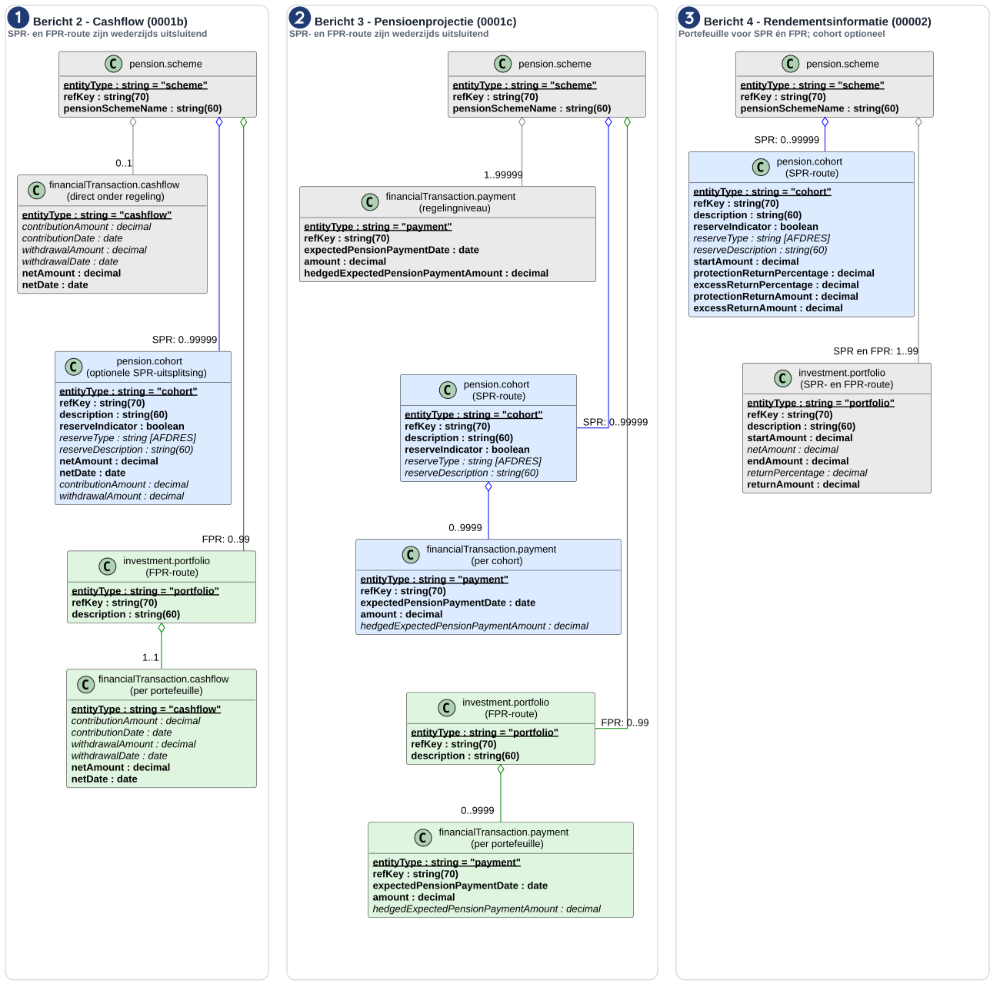
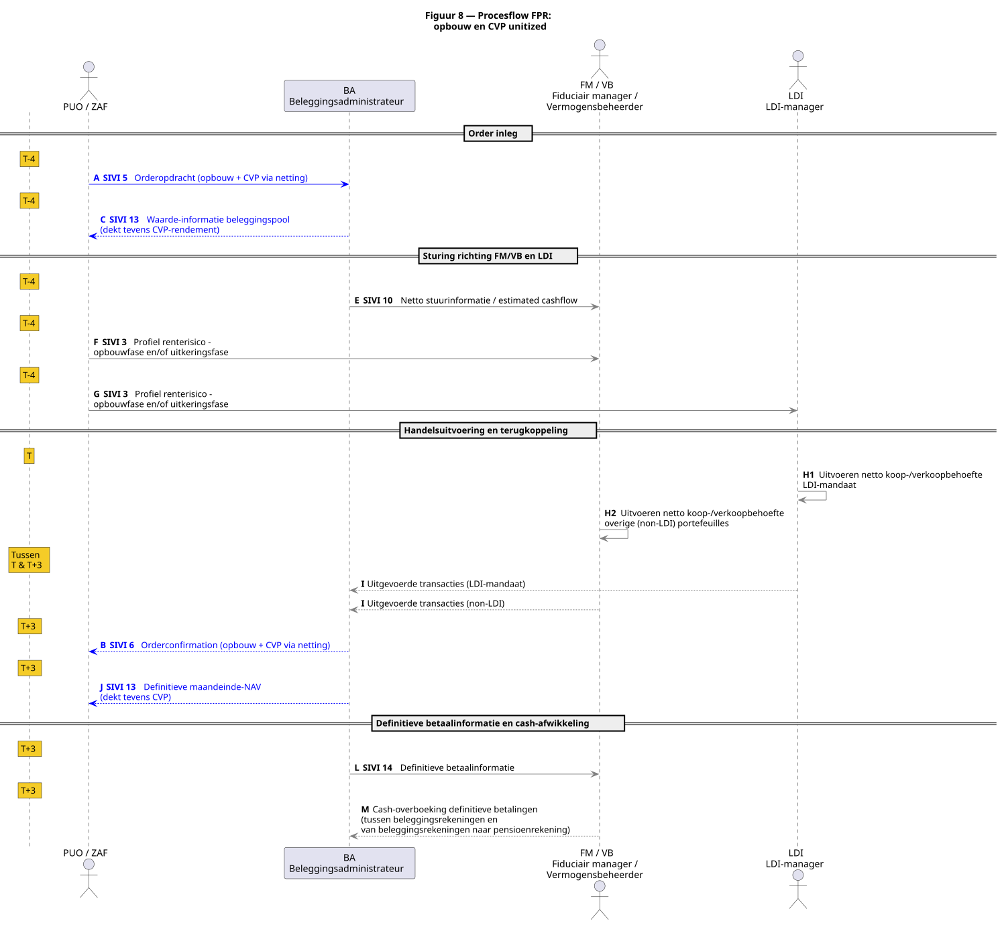
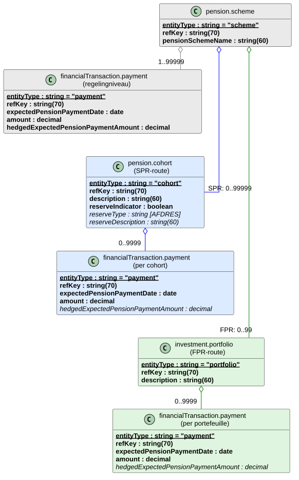
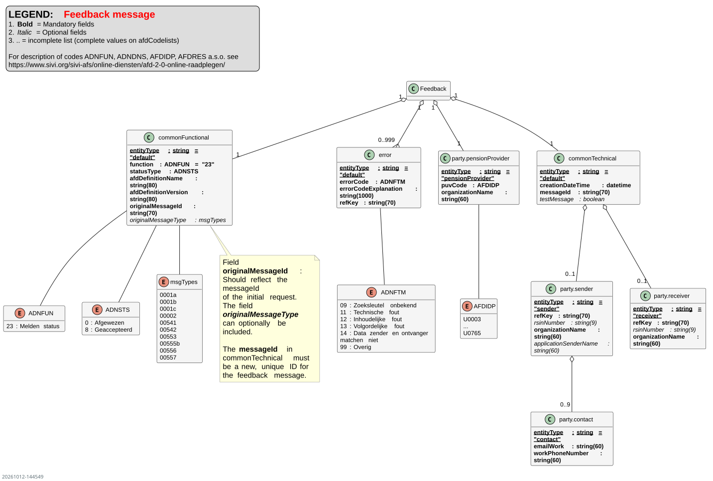

VB-PUO Standard Documentation
Functional and technical documentation for the VB-PUO data exchange standard (unofficial English translation).

| Author(s) | SIVI |
| Status | Release 2027 (v1.4.0) |
| Website | www.sivi.org |
© SIVI — Knowledge and standardisation institute for financial services
Colophon
This is an unofficial, machine-assisted English translation. In case of differences, the Dutch version prevails. The figures are still in Dutch; English versions will follow.
| Date | 20261012 |
| Project Reference | VBPUO |
| Confidentiality | Public |
| Status | Release 2027 |
| Client | Steering Group DSO |
| Authors | SIVI |
| Repository | https://github.com/Stichting-SIVI/VBPUOdsk |
| Dutch version (authoritative) | https://stichting-sivi.github.io/VBPUOdsk-docs-prepare/ (official; in case of differences the Dutch version prevails) |
| Document version | 20261012 Manual Standard data exchange VB-PUO release 2027 |
| Release numbers | GitHub release 2027 Tag v1.4.0 consists of the following components:
|
| Release notes | https://github.com/Stichting-SIVI/VBPUOdsk/releases/tag/v1.4.0 The release notes describe the changes. The impact of the changes has been incorporated into this manual. |
| Changes after publication | 16-11-2026 — §2.9.2 Release Policy and Version Management: the example of the supported releases still listed the releases for 2026 and has been updated to 2027 (Release 2027, Release 2026 and 2024 November). The release policy itself has not changed: in addition to the current annual release, the two preceding ones remain available. Reason: questions about the number of supported releases. The proposal to support the current and the immediately preceding annual release, plus |
| Prerelease 2027 | The manual of the prerelease of 21 July 2026 remains available for consultation until April 2027: English prerelease 2027 (Dutch: prerelease 2027). |
| Technical changes release 2027 | Transition to JSON Schema Draft 2020-12:
See also GitHub issue #104 JSON Schema Version |
| Functional changes release 2027 |
The most important functional changes:
The complete overview, per topic and per message, is given in §8.5 Changes Release 2027; what has been added or changed since the prerelease of 21 July 2026 is shown there in red. |
Table of Contents
- 1 Introduction
- 2 Principles
- 3 Processes & Information Flows – Solidarity Premium Scheme
- 4 Processes & Information Flows – Flexible Premium Scheme
- 5 Approach/Set-up of the Data Standard
- 6 Functional Specifications
- 6.4 Messages
- 6.5 Cross-reference Attributes & Messages
- 7 Technical Specifications
- 7.4 Transport / OpenAPI
- 7.5 Message Assembly, Versioning and Publication
- 7.6 Processing Protocol for Partial messages (Chunking)
- 8 Appendices
- 8.1 Glossary/List of Abbreviations Asset Management & Pension Administration
- 8.2 Glossary of Data Exchange Based on Standards
- 8.3 Components of the Standard Asset Management Pension Administration
- 8.4 Translation Table from Functional Attributes to AFD2.0 Attributes.
- 8.5 Changes Release 2027
1 Introduction
In this introduction we discuss the context, the purpose and the target audience of this manual. We also present the structure of the manual (in some detail).
1.1 Context
Final report
In early September 2023 the final report ‘’Results of research: Standard for data exchange between pension administration & asset management parties’’ was published.
With the introduction/implementation of the Future Pensions Act (Wtp), closer alignment between fund assets and the collective administration of personal pension assets is necessary. This increases the frequency of the required information exchange. In current practice, pension providers and asset management parties arrange the information exchange between themselves. Because the information exchange is intensifying, standardisation of the information exchange is desirable.
The final report mentioned describes the functional data required for the exchange, the information flows and the participant communication that partly depends on them.
The data and information flows have been worked out for both the solidarity premium scheme and the flexible premium scheme.
The final report is based on contributions from various organisations, including APG, AZL, Caceis, Capgemini, H&C, Van Lanschot Kempen IM, MN, Pensioenfederatie, SIVI and TKP. Through a consultation round, various other administration organisations, fiduciaries, custodians and pension funds, among others, were also involved. This consultation round has been completed and the input from it has been incorporated.
Follow-up
SIVI translates the final report into a data standard based on AFD 2.0 from SVI AFS. This data standard comes with a base message from which we derived the original 14 messages. The messages are exchanged via REST API endpoints. In addition to those messages, a Feedback_Message is available for feedback. In asynchronous processing, the feedback message is the mandatory mechanism for status and error feedback (see §4.4). The message set has since been changed, although the message names have been retained.
Governance and management
The standard represents a shared interest of pension administration and asset management, for which administrative and substantive management must be assigned. After the introduction of the standard, new wishes will arise that may or may not have to be included in the standard.
It has been agreed that:
-
Ownership of the standard rests with the Pensioenfederatie.
-
Substantive and administrative management of the standard will be put in place.
-
The standard is managed by the management organisation SIVI.
-
An advisory group supports the management and any further development.
1.2 Purpose
This manual provides an explanation of the standard for data exchange between asset management and pension administration. The manual gives:
-
Analysts and developers a guide to implement the standard (or have it implemented);
-
Those involved insight into the management of the standard.
1.3 Target Audience
This manual is intended for consultants, analysts and developers involved in the implementation of the standard for data exchange between asset management and pension administration parties.
1.4 Structure
1.4.1 Notation of Attribute Names
In the descriptive texts of this manual you will come across a dual naming for data fields, in the following format:
technicalName (Functional Name)
-
technicalName: This is the definitive, technical attribute name in accordance with the SIVI AFD 2.0 standard, shown in a monospace font. This is the name that must actually be used in the JSON messages.
-
(Functional Name): This is the original, functional name as used during the requirements and design phase. This name is given temporarily, between parentheses and in a slightly smaller, normal font, to improve recognisability during the transition. In a future release of this manual this functional name will be removed.
The complete Translation Table from Functional Attributes to AFD2.0 Attributes is included in 8.4.
| Chapter | Contents |
|---|---|
| 1 | Introduction In this introduction we discuss the context, the purpose and the target audience of this manual. We also present the structure of the manual (in some detail). |
| 2 | Principles In this chapter we discuss the main principles for the development, design and governance of the standard. This is based mainly on Results of research: Standard for data exchange between pension administration & asset management parties’’. |
| 3 | Processes & information flows – Solidarity premium scheme The processes & information flows are described in detail in the report ‘’Results of research: Standard for data exchange between pension administration & asset management parties’’: Chapter 4: Solidarity premium scheme. |
| 4 | Processes & information flows – Flexible premium scheme The processes & information flows are described in detail in the report ‘’Results of research: Standard for data exchange between pension administration & asset management parties’’: Chapter 5: Flexible premium scheme. |
| 5 | Approach/set-up of the data standard In this chapter we explain how we arrive at the specifications of the messages. Steps to arrive at the functional specifications of the messages:
|
| 6 | Functional specifications This chapter contains the functional specifications:
|
| 7 | Technical specifications The technical data specifications are made available on the basis of AFD 2.0 from SIVI AFS. In this chapter the reader can read an explanation. |
| 8 | Appendices In the appendices you will find the:
|
1.5 Links
This manual contains links, mostly source references. These are coloured blue. By clicking the link, the reader is taken to the relevant web page or the relevant report/article.
1.6 Source of the Title Page Image
2 Principles
In this chapter we discuss the main principles for the development, design and governance of the standard. This is based mainly on Results of research: Standard for data exchange between pension administration & asset management parties’’.
2.1 Preamble: Principles of VBPUO Standardisation
The aim of standardisation is a seamless and efficient exchange of information between all parties in the chain. The VBPUO standard rests on the following principles:
-
Pragmatism and flexibility
The standard is not a requirement for uniformity, but a framework for interoperability. Chain partners keep their own internal processes and systems. The focus is on streamlining external communication. -
Interoperability as the ultimate goal
The value of the standard is proven in practice. The test: an organisation must be able to switch to another chain partner without problems, without significant changes to the data interface. -
Controlled degrees of freedom
Flexibility is not unlimited. For predictability and reliability, the permitted variations are explicitly defined and deliberately limited. -
Supported by the chain
Changes and variations do not arise unilaterally. They require broad support, in order to prevent fragmentation and to preserve the value of the standard in the long term.
In this way the VBPUO standard remains a shared instrument for efficiency, predictability and future-proof cooperation in the chain.
2.2 Background
Pension administration organisations (PUOs) regularly need information from fiduciary managers (FMs) and/or investment administrators (BAs) in order to administer the participant records of pension schemes correctly. Conversely, FMs (and asset managers) need information in order to invest the funds for the various pension providers within the framework of the agreed investment policy. The required data exchange between PUOs, FMs and BAs (and asset managers) is expected to be very similar in all cases.
With the introduction of the Wtp, the information need will change and the frequency with which information exchange is desired will increase. The information need of PUOs, FMs and BAs for the services to pension providers is fundamentally very similar. Any differences in the information exchange will depend mainly on the type of scheme being administered.
In the accumulation phase of the flexible premium scheme (FPR), the information need will largely correspond to that of the current 'defined contribution' schemes, possibly supplemented with data on the risk-sharing reserve. As regards the exchange of data during the collective payout phase, this will in many respects be comparable to the payout phase of the solidarity premium scheme.
For the solidarity premium scheme (SPR), an entirely new data flow will have to be set up, for both the accumulation phase and the payout phase. There will have to be closer alignment between the fund assets invested by the FM and the collective administration of personal pension assets by the PUO.
2.3 Out of Scope
The following fall outside the scope of the elaboration of the information exchange:
-
Contractual agreements between parties regarding the overall process around asset management. The standard provides for the necessary information exchange, the data need, between PUOs and asset management parties at the various process moments. The standard provides for the data need for both the Solidarity Premium Scheme (SPR) and the Flexible Premium Scheme (FPR). The exact form of the data exchange between parties is, however, determined by contractual agreements between the cooperating pension provider and its asset management partners.
-
Processes that are already running and do not fundamentally change, such as the reconciliation of the investment administration between the FM and the BA/asset service provider.
-
Information that does not need to be exchanged because it is used by only one party in the chain.
-
Information regarding investment policy, protection and allocation rules and cohort composition. This information is shared by the pension provider with the parties involved through various policy documents, such as the strategic investment policy, the annual investment plan and the investment guidelines.
-
Information exchange between pension participant, pension provider and/or PUO.
Allocation of returns to participants.
-
Information about costs:
-
As yet, there is no fully crystallised and unambiguous process in cooperation chains for arriving at the cost allocation (and also the communication about costs). Experience so far seems to indicate that this is difficult to standardise. Different parties make different trade-offs regarding processing, granularity, actual versus budgeted, making provisions, timeliness, division of roles in supplying the various components, etc.
-
It is expected that existing processes for compiling the DNB annual statement J402 will continue to form the basis for the information exchange about costs, for both the SPR and the FPR.
-
Insight into/look-through to the actual investments, usually referred to as “Lookthrough” information. Ad hoc requests for additional information from the BA/asset service provider or FM may be necessary, but do not fall under regular data exchange in the context of the exchange as described in this manual.
-
Any specific information exchange required for a premium-benefit agreement as offered by insurers.
-
The periodicity of the exchange. Not every process within pension administration leads to necessary actions within asset management. The consequences of processes that do lead to asset management actions must, however, be exchanged on a periodic basis. The periodicity of the exchange of the related messages can be arranged flexibly between parties.
-
Funding ratio / coverage ratio. The calculation and reporting of the funding ratio falls under the responsibility of the PUO or BA. The VBPUO standard does not provide a separate message for this. See GitHub issue #118.
-
Division of tasks/Division of roles. The way in which parties cooperate, the division of roles or governance, is not part of the standard.
2.4 Principles of Data Exchange
To make the data exchange as practical as possible, the following principles apply:
-
The data standard can be used for any (governance) division between pension administration and asset management.
-
If the asset service provider fulfils an independent role as leading BA and/or tests the execution of policy, it receives the same information as the FM, so that it can report independently to pension funds on the investment policy followed and realised in relation to the objectives.
-
The FM role receives the information needed to invest the collective assets within the framework of the investment policy, taking into account inflow and outflow (through premiums, benefits and value transfers) and projected benefits.
-
The PUO gives the participant insight into the development of the assets intended for the pension benefit (SPR) and/or the capital intended for pension (FPR), including the allocation of returns and expected benefits.
-
Parties receive the data intended for them directly from the sending party. An FM therefore does not, for example, have to forward the information received from a PUO to another party selected by the pension fund, such as an asset service provider and/or a Liability-Driven Investment (LDI) manager. The consequence is that the sender sends the same message to each receiver separately, with its own endpoint and identification per receiver. In terms of content these are then the same data; technically they are different messages. The purpose of the sending may differ per receiver. The same order instruction is an instruction for one receiver and a notification or record for another; for a third receiver the same message may serve risk control.
-
Messages once accepted are not corrected unilaterally. Messages that have been accepted by the receiving party may lead directly to irreversible operational processes, such as investment transactions or the allocation of returns to participants. If a sending party discovers an error in a message that has already been accepted, coordination with the receiving party is mandatory before any correction message is sent. The specific procedures for this are explained further in section 4.4.
2.5 Clarification of Data Exchange Principles
During the substantive consultation round in May/June 2023, a number of issues came up regularly that did not lead to changes in the substantive part of the report, but did need to be clarified to prevent misunderstandings.
-
Data model: The data model contains only the data needed to be able to send and/or receive the required information about the investment of pension money and to be able to share information about realised investment results.
-
Roles (not prescriptive): To support the elaboration of the data model, data exchange between various parties in the chain is described. To support understanding of the data model, a division of roles in the chain has been outlined for both the SPR and the FPR, in which the governance model provides for certain segregations of duties. In an alternative set-up, roles may be performed by one and the same party; for example, the FM may also keep the leading investment administration. It is not the intention of this manual to prescribe the form of cooperation between parties and thus the governance model.
-
Periodicity: In the description of a number of processes it has been indicated that these are expected to have a monthly periodicity. This periodicity is not prescribed. The exchange moments and periods mentioned are examples that may be filled in differently in the agreements between parties.
-
Process description: For the FPR it is possible to start from already existing processes (including -indicative- timelines and division of roles) for (collective) individual DC schemes. For the SPR this is not yet the case.
-
Costs: The information exchange about costs falls outside the scope of this standard. For the time being we assume that it will build on existing processes that also form the basis for, for example, the J402 DNB annual statement.
-
The term asset management: When the term “asset management” is used in this manual, it refers to the parties: FM, BA/asset service provider, custodian and Liability-Driven Investment manager. “Pension administration” refers to the combination of the statutory pension provider and the PUOs that carry out the administration for them.
-
Language: This report has been prepared for the data exchange between PUOs and asset managers within the Dutch WTP context. The report and the standard are delivered in the Dutch language. The names of the variables used in the standards are, however, in English, so that the conceptual framework is also understandable for non-Dutch speakers who are familiar with asset management.
2.6 Participant Communication
See chapter 6 of the final report mentioned earlier in the introduction.
2.7 Technology
A number of principles have been formulated regarding the use and technical implementation of the data standard:
-
The data exchange is “sustainable”, i.e. not tied to technological trends (or hypes).
-
The documentation is clear and transparent.
-
The data set can be adjusted in consultation with the parties involved.
-
Open technical standards are used as much as possible (for example REST, JSON, SOAP, ODATA, OAuth).
The following has been agreed for the technical implementation of the message traffic:
-
Data exchange: RESTful Web services.
-
Data format: JSON.
-
For the data format, we conform to AFD 2.0 within this standard. This has consequences for, among other things, the naming of the attributes and entities.
- AFD 2.0 defines the data type of an attribute, but does not restrict the string length or the number of decimal places. Any restriction of the number of positions can be agreed between parties. That applies to AFD 2.0 in general. The VB-PUO schemas do lay down lengths and precision (
maxLength,multipleOf); these are binding and cannot be lifted bilaterally. See https://www.manula.com/manuals/sivi/sivi-all-finance-standard/1/en/topic/data-types-and-formats
-
Message processing is asynchronous. The message traffic is synchronous in accordance with REST. The frequency of the information exchange is periodic (for example monthly) and processing by the receiver is in principle on a daily basis; synchronous (real-time) is not necessary.
-
The message initiative lies with the sender of the information, who brings (pushes) the message to the receiver.
-
Service window: the recommendation is office hours. Parties can make their own agreements on this between themselves.
-
Security aspects:
-
Two-way authentication (mutual-TLS) is used during the transport of information.
-
Authentication of the sender at the receiving server is required.
-
The data must be guaranteed to arrive at the receiver unchanged. For this purpose the payload can be digitally signed (x-jws-signature, see §7.4).
Agreements on the aspects below are worked out and dealt with within the framework of the governance structure around the standard.
-
The complete – technical – data standard and the various messages based on it.
-
Maximum size (numbers and/or file size) of the message. See below under "Handling Large Messages".
-
Granularity of the message traffic.
- A lower granularity means that -at a certain level- fewer details are exchanged.
-
Processing time of received messages.
-
Message feedback: response messages (acknowledgement of receipt and correct or error message – substantive and technical – or warning). The rules for this must be described.
-
Response time (server).
Handling Large Messages (Partial messages or Chunking)
Although the number of transactions per day may be relatively low, the size of individual messages (in particular Message 3 - Pension Projection) can be considerable. In practice, messages larger than approximately 4 MB can lead to problems in transport and processing via modern cloud infrastructures.
To deal with this, the standard offers a mechanism for splitting large messages into several smaller partial messages (chunks).
-
Mechanism: The splitting is done via an optional chunking.default block at the top level of a message. This block contains metadata about the splitting, such as the sequence number and the total number of chunks.
-
Applicability: This mechanism applies to all functional messages, but not to the feedback message.
-
Validity: Each partial message is a self-contained, valid JSON message.
-
Processing: The receiver can only merge the partial messages into the complete, logical message after receipt of all parts. An error in one partial message means that the entire logical message is regarded as failed.
-
Limits: The standard does not prescribe a maximum number of chunks. The maximum message size and the number of chunks are agreements between chain parties (TOM / SLA). See GitHub issue #127.
The detailed specifications of this mechanism can be found in Chapter 6.
2.8 Transport of Data
(Some) standardisation of the transport of data, an interface, is of great importance. Standardisation makes life much simpler for the sending and receiving parties and prevents all cooperating parties from having to reinvent the wheel bilaterally every time. Its elaboration is limited to one solution, namely RESTful API/web service. The SIVI API framework provides support for this. Parties that cannot or do not wish to work with the RESTful API/web service solution can develop bilateral solutions themselves. No support for this is provided by the working groups around the standard.
The web service solution is preferred because the information flow can then be managed better (faster through the (internal) chain, better versioning, better verifiability). A portal solution involves manual work and is therefore undesirable.
See also: 7.4 Transport / OpenAPI.
2.9 Governance, Management and Releases
2.9.1 Roles and Responsibilities
The use of the standard forms part of the individual agreements between pension providers and asset management parties. Parties use the standard in accordance with the agreements that apply to the standard and that are laid down in their contracts.
The standard is owned by the Pensioenfederatie. Management has been placed with SIVI, which acts on behalf of the Steering Group DSO. The substantive further development takes place in consultation with the sector through an Advisory Group (KBG).
The precise organisation of the management, the roles, the change procedure and the working method of the Advisory Group are laid down in the document "Organisation of the Management of the Standard Asset Management Pension Administration". This document is the authoritative source for all governance-related agreements.
2.9.2 Release Policy and Version Management
To make the further development of the standard predictable and manageable, the following release policy applies:
-
Annual release cycle: Each year a prerelease is published at the end of June, which is converted into the definitive annual release at the end of September (e.g. "Release 2026").
-
Continuous development: Changes approved during the year are made available on GitHub as soon as they have been completed.
-
Support of versions: In addition to the current annual release, the two preceding annual releases remain available. For 2027 these are: Release 2027 (v1.4.0), Release 2026 (v1.3.x) and Release “2024 November” (v1.2.0).
JSON Schema Draft 2020-12
From release 2027, the VBPUO standard uses JSON Schema Draft 2020-12 for the JSON schemas published via GitHub.
The move to Draft 2020-12 primarily concerns: - modernisation of the JSON Schema dialect; - harmonisation with current tooling and IDE support; - adjustment of internal and external schema references.
As a result of this technical migration, the functional message structures and the business meaning of the messages remain unchanged.
3 Processes & Information Flows – Solidarity Premium Scheme
3.1 Introduction
This section describes the information exchange between the parties involved that is needed to implement the Solidarity Premium Scheme in a robust way1.
Figure 1 below shows the information exchange between the parties involved schematically. The investment administrator (BA) provides the pension administration organisation (PUO) with information independently of the fiduciary manager (FM) and can also perform a reviewing role. If that option is not chosen and the fiduciary manager also keeps the leading investment administration, information flow 2 will run from the FM to the PUO.

Figure 1 - Scope information exchange SPR
Legend (information flows/messages):
1a - Assets per cohort
1b - Cashflow (contributions and withdrawals
1c - Pension projections /projected cash flows
2 - Returns and assets
The roles of the various parties in the diagram are explained in more detail below:
-
The pension administration organisation (PUO) is responsible for allocating returns, in accordance with the allocation rules set by the pension provider, to the personal pension assets of participants (possibly via a collective payout phase), the solidarity reserve, any compensation deposit and possibly other reserves.
On the basis of these personal pension assets, benefits are determined and projected in accordance with the principles of the pension provider.
The pension assets and projected benefits are delivered by cohort to the FM and/or the BA. The PUO processes premiums, benefits and changes in the participant file and takes care of participant communication. -
The fiduciary manager (FM) supports the pension provider in drawing up the integral investment policy, takes care of the implementation of this investment policy and, in doing so, directs the operational asset managers. The FM will also keep a (shadow) investment administration. For large pension providers without an FM, the pension provider itself is responsible for directing both internal and external asset managers.
-
The operational asset managers manage parts of the portfolio and are directed by the FM in doing so. It is possible that (for certain parts) the FM and the operational asset manager belong to the same organisation.
-
The investment administrator/asset service provider (BA; usually an additional service of the custodian) keeps the independent investment administration for the pension provider. The BA calculates the total return on the investments and (if necessary) the return on various investment (sub)portfolios and delivers this to the PUO. As indicated above, the FM can also keep the leading investment administration. The investment administration is fed from the settlement of changes in the portfolio, carried out by the operational asset managers. If desired, this administration is reconciled with the FM. The BA also often takes care of drawing up supervisory reports or parts of them.
3.2 SPR Information Flows
The information flows for SPR products between the FM, the BA and the PUO are:
-
Information from the PUO about assets, inflow and outflow of money and projected cash flows to be hedged (possibly per cohort), to enable the FM and BA to perform their roles.
-
Information from the BA or FM about returns that the pension provider needs in order to arrive at a correct allocation to the participants.
The information flow from the PUO to FM/BA (flow 1) is divided into three messages: 1a (assets), 1b (inflow and outflow) and 1c (projected benefits). Value and return information is sent to the PUO through message 4. Return Information.
These messages are worked out in more detail below.
3.2.1 Message 1. Assets (1a)
On a periodic (expected to be monthly) basis, the FM receives, for a pension provider (identified by puvCode) per scheme (identified by refKey), the total pension assets (startAmount) at the start of the period (startDate).
In addition to the information at total level, the fiduciary manager can also receive the pension assets (startAmount) per (age) cohort (identified by refKey). For example, for the age cohort 25-29 years, the total of the personal pension assets at the start can be received.
With the cohort information, the FM can, if desired, make a total calculation and test the reconciliation with the information delivered at total/collective level against the policy of the fund. This is useful for a robust handover and audit trail, depending on the agreements parties make. In accordance with the policy of the pension provider, rebalancing may be desirable in the case of (large) deviations. In addition to the FM, this information can, if desired, also be provided to the BA/asset service provider, so that it too can carry out review and reporting activities using the leading investment administration.
Allocation to Portfolios
In addition to the total assets, the PUO can also use this message to pass on to the asset manager the desired allocation of these assets across different portfolios. This gives the asset manager important control information for acting in accordance with the benchmark portfolio used by the PUO.
This allocation information can be included both at total level (under the pension scheme) and at cohort level. These are optional fields with which the exposure to, for example, a return portfolio or a protection portfolio can be specified, both as an absolute amount (startExposureAmount) and as a percentage (startExposurePercentage). Although it is mainly the total level that matters for control, the information at cohort level can be useful for reporting purposes.
Functional specification per message: see chapter 6 and in particular 6.4.2 Message Structure 1. Assets (0001a).
The current message structure can be found on GitHub under “Wiki/Berichtenoverzicht”
For the date conventions for startDate, see the explanation of financialInformation.reportingPeriod in §6.3.
3.2.2 Message 2. Cashflow (1b, inflow and outflow)
On a periodic (expected to be monthly) basis, the FM receives, for a pension provider (puvCode) per scheme (refKey), the inflow (contributionAmount) in the period (on the contributionDate) and the outflow, or a netted cash flow (netAmount), in the period (on the netDate).
In addition to the information at total level, the FM can also receive per (age) cohort (refKey) the inflow (contributionAmount) and outflow (withdrawalAmount), or a netted cash flow (netAmount), over the period (startDate to endDate).
In addition to premiums, value transfers and benefits, the inflow and outflow also include the shifts between cohorts, where these occur. A cohort can also be a year of birth. An example is the personal pension assets of participants who move from cohort 25-29 years to cohort 30-34 years. The ‘cohort’ solidarity reserve, the ‘cohort’ compensation deposit and possibly other reserves will also be involved.
With the cohort information, the FM can, if desired, make a total calculation and test the reconciliation with the information delivered at total/collective level against the policy of the fund. This is useful for a robust handover and audit trail, depending on the agreements parties make. In addition to the FM, this information can, if desired, also be provided to the BA/asset service provider, so that it too can carry out review and reporting activities using the leading investment administration.
Population patterns in message 2. Figure 1a shows how message 2 is structured per scheme.

Figure 1a — Message 2 Cashflow (0001b): SPR and FPR route Full view (SVG)
The figure shows only the fields that matter for the routes; the full message structure is in §6.4.3.
- Grey: the cash flow directly under the scheme. It is present in both routes. In the FPR route it carries the total of the portfolios.
- Blue: the SPR route. The cash flow can in addition be broken down per cohort; the sum of the cohorts reconciles with the cash flow under the scheme.
- Green: the FPR route. Each investment portfolio has exactly one cash flow.
A scheme uses either the breakdown per cohort or the breakdown per investment portfolio, never both. Fields in bold are mandatory, fields in italics optional: in every cash flow block, netAmount and netDate are mandatory. For messages 2, 3 and 4 together, see §3.2.5.
Applications of the Cashflow Message
The standard offers the flexibility to use this message for two different purposes, which can exist side by side in practice:
-
Prospective Application (Forward-looking)
-
Purpose: Liquidity management. In this application, an estimate of the expected net cash flow for the coming period is passed on. The netted amount (
netAmount) serves as input for the actual monthly (de)allocation payment between the PUO and the asset manager. -
Characteristics: Usually a netted amount at scheme total level.
-
-
Retrospective Application (Backward-looking)
-
Purpose: Analysis and accountability. Here, the actually realised cash flows from a closed period are reported. This information is separate from the monthly allocation payment.
-
Characteristics: The netted amount (
netAmount) is mandatory; the breakdown (contributionAmount/withdrawalAmount) can be delivered in addition for reporting purposes. This variant lends itself to providing details at cohort level.
-
The FM takes care of investing the inflow or freeing up funds to finance the outflow. netAmount and netDate are mandatory. On the netDate the parties exchange the money. Inflow and outflow can in addition be delivered separately for reporting purposes.
The method of calculating the amount of the inflow or the outflow depends on the preference of the pension provider and the working method of the PUO. The FM does not need to be informed of the calculation method, nor of the period to which the data relate. After all, investments can never be carried out retroactively. For the audit trail, it may be desirable to record the period in the information exchange nonetheless
Functional specification per message: see chapter 6, in particular 6.4.3 Message Structure 2. Cashflow (0001b).
The current message structure can be found on GitHub under “Wiki/Berichtenoverzicht”
3.2.3 Message 3. Pension Projection (1c, projected benefits)
On a periodic (expected to be monthly) basis (projectionDate), the FM receives from a pension provider (puvCode), per scheme (refKey) and per (age) cohort (refKey), the projected benefits (amount) on the basis of the accumulated assets for future periods (expectedPensionPaymentDate).
In FPR, the projected benefits can be delivered per investment portfolio instead of per cohort. See §3.2.5 and, for FPR, §4.3.3.
For example, for the cohort of 25-29-year-olds, this (mainly) concerns the projected retirement pension in 39 years' time (assuming the pension age set in the scheme rules). In the information flow as at 31 December 2022, the first (benefit) cash flow for this cohort is then expected in 2061. This information is important for the FM to set up (the management of) the protection portfolio and to generate the intended protection returns. The desired protection per age cohort (for example 25% for 25-29 years and 100% from age 70) determines the interest rate sensitivity to be hedged. It is no longer sufficient to base a projection of benefits only on the entire population in a pension scheme, because the interest rate risk is no longer shared by the entire participant population. If desired, the ‘cohort’ solidarity reserve, possibly the ‘cohort’ compensation deposit and possibly other reserves can also be allocated protection return. A (notional) cash flow profile will then have to be drawn up for these cohorts. In addition to the individual projected benefits per cohort (including the reserves), a total projected benefit for the entire population can also be delivered (amount). This is equal to the sum of the projected benefits of all cohorts per future period (expectedPensionPaymentDate).
Finally, the data exchange contains the cash flows to be hedged per scheme (hedgedExpectedPensionPaymentAmount) per future period. This is equal to the sum of the weighted projected benefits per cohort. The weighting factor is equal to the percentage of protection per cohort. For example: the protection of the cohort 25-29 years is 25% and the protection of the cohort from age 70 is 100%. The projected benefits of the cohort 25-29 years are multiplied by 25% and added to the full projected benefits of the cohort from age 70 multiplied by 100%. In this way, a profile of the cash flows to be hedged is created. This exchange avoids misunderstandings about the cash flows to be hedged and can, if desired, introduce a check into the process.
Functional specification per message: see chapter 6 and in particular 6.4.4 Message Structure 3. Pension Projection (0001c)
The current message structure can be found on GitHub under “Wiki/Berichtenoverzicht”
For the unambiguous application of projectionDate and expectedPensionPaymentDate, see the explanation of financialInformation.reportingPeriod in §6.3.
For cohorts with value 0, the rule in §6.3 applies; it applies to all messages with cohorts.
3.2.4 Message 4. Return Information (2, Information Need of the PUO)
Information flow from BA/asset service provider to the PUO (flow 2 from Figure 1) in the SPR.
To administer the Solidarity Premium Scheme, the PUO periodically (expected to be monthly) needs information about the return achieved.
Periodically, the PUO receives over the period (which runs from startDate to endDate), for a pension provider (puvCode) per scheme (refKey) and per portfolio (refKey), the value at the start of the period (startAmount), the value at the end of the period (endAmount) and the return in portfolio currency and (possibly) expressed as a percentage (returnPercentage). The PUO takes care of the allocation of returns to participants on the basis of portfolio returns. Optionally, pension assets (startAmount), protection return (protectionReturnAmount) and excess return (excessReturnAmount) can also be shared with the PUO per cohort in the scheme (refKey). Whether these optional elements are exchanged depends on the roles and responsibilities agreed between the cooperating parties. The principle here is that the PUO is responsible for allocating returns, in accordance with the allocation rules set by the pension provider, to the personal pension assets of participants, the solidarity reserve, any compensation deposit and possibly other reserves.
The breakdown per portfolio applies in SPR and FPR; every scheme has at least one portfolio. See §3.2.5.
The BA/asset service provider provides the information needed for this to the PUO and bases it on the independent investment administration. In an alternative governance model, the FM can provide this information to the PUO.
If the Solidarity Premium Scheme is set up with indirect (theoretical) protection return, information about the total return is in principle sufficient. The allocation of protection return then does not depend on the realised return. The PUO can calculate the excess return it has to allocate on the basis of the total return minus the allocated indirect (theoretical) protection return.
If the Solidarity Premium Scheme bases the protection return to be allocated on the direct (actually) achieved return, the PUO must have a breakdown of the return achieved. The BA/asset service provider must then deliver the return for sub-portfolios (and optionally per cohort), in which a distinction is made at least between the protection portfolio and the excess return portfolio. Depending on the way in which actual protection return is allocated to individual participants, a further breakdown of the protection portfolio into sub-portfolios may be desirable.
A (further) breakdown of portfolios may moreover be desirable for communication about achieved returns to participants, for reconciliation purposes and for any statutory obligations. This depends on the set-up desired by the pension provider.
The information exchange for the solidarity scheme based on the direct (actually) achieved return can also be used for an exchange in a specific implementation variant of the flexible premium scheme. This choice will mainly be made by parties that, for the flexible premium scheme, use a method of allocating returns comparable to that of the solidarity premium scheme based on actual returns. For each cohort, an actual protection return and excess return are then delivered to the PUO as an amount and optionally as a percentage.
Return Information at Multiple Levels in One Message
Within one message 4, several types of return can be included: total return (total), protection return (matching) and excess return (return). The refKey identifies per block which type of return or which portfolio is concerned. It is not necessary to send a separate message per type. The standard lays down no formal relationship between the three types; the assumption that matching + return = total is not enforced.
See GitHub issue #109.
Functional specification per message: see chapter 6, in particular 6.4.5 Message Structure 4. Return Information (00002)
A graphical overview of the message structure can be found on GitHub under “Wiki/Berichtenoverzicht”. The JSON schemas and this manual are, however, authoritative.
3.2.5 SPR and FPR Route in Messages 2, 3 and 4
In messages 2, 3 and 4, the information under a scheme (pension.scheme) can be broken down in two ways: per cohort, via pension.cohort (the SPR route), or per investment portfolio, via investment.portfolio (the FPR route). In addition, each of these messages has data directly under the scheme that apply in both routes.
Figure 1b puts the three messages side by side, in the same colours as Figure 1a: grey applies to both routes, blue is the SPR route, green the FPR route. Fields in bold are mandatory, fields in italics optional.

Figure 1b — Messages 2, 3 and 4: SPR and FPR route side by side Full view (SVG)
The figure shows only the fields that matter for the routes; the full message structures are in §6.4.3, §6.4.4 and §6.4.5.
How the routes relate. A scheme never uses both breakdowns at the same time: per cohort or per investment portfolio, not both. In message 2 the breakdown is optional; the cash flow directly under the scheme may also stand on its own. In message 3 exactly one breakdown is used. The data directly under the scheme apply in both routes; in the FPR route they normally carry the total of the portfolios. In message 4 the investment portfolio is present in both routes, and the breakdown per cohort is an optional addition.
Message 2: the money is exchanged on the netDate. In every cash flow block, netAmount and netDate are mandatory; together they form the netted cash instruction. On the netDate the parties exchange the money. The fields for inflow and outflow, contributionAmount, contributionDate, withdrawalAmount and withdrawalDate, are optional and serve reporting. In the cohort these are only contributionAmount and withdrawalAmount. Each investment portfolio has its own netDate; it does not have to be equal to the netDate of the cash flow directly under the scheme. If the data are broken down per cohort in the SPR route, the sum of the cohort amounts reconciles with the amount at scheme level: scheme.netAmount = sum(cohort.netAmount). See §6.3.1 for the consistency checks.
Message 3: projection per investment portfolio. The portfolio branch is intended for schemes in which several investment portfolios are distinguished. The payments directly under the scheme are scheme totals.
Reserve fields only in the cohort. reserveIndicator (mandatory), reserveType and reserveDescription are in pension.cohort and, in none of the three messages, on the investment portfolio. If reserveIndicator = true, reserveType is mandatory; reserveDescription is desirable for 99 (Other) and possible for the other codes (see §6.3). How reserves are linked to investment portfolios is a matter of set-up: for example, fifteen reserves may be invested in six portfolios. The pension provider and the asset manager lay down that link between themselves; it is not included in the message.
See GitHub issue #113.
Functional specification per message: see chapter 6, in particular 6.4.3, 6.4.4 and 6.4.5.
4 Processes & Information Flows – Flexible Premium Scheme
4.1 Introduction
This chapter describes the exchange of information between the parties involved that is needed to implement the Flexible Premium Scheme in a robust way. The required data set has been determined on the basis of the principles and the scope.
The process of the flexible premium scheme is controlled according to one FPR model for "ordering" investments, which is applied in the operational cooperation between pension administration and asset management. Earlier releases distinguished between a simpler, direct order model and a more extensive, layered order model. That distinction has been dropped: the data exchange is the same in both cases.
A model is also conceivable in which the SPR data model can be used for the FPR data exchange. In this model, FPR is set up in a way comparable to SPR, in effect only supporting multiple risk profiles per cohort.
Within a Flexible Premium Scheme (FPR), there are, in addition to the individual, 'unitized' money flows, also collective premium flows. These are money flows that do not belong to one specific participant, such as risk premiums, contributions to reserves, or withdrawals from a collective payout pool.
The standard FPR messages (5 to 15) are aimed purely at the unitized world and do not support these collective flows. To solve this, the agreement is that parties fall back on the proven SPR messages 1, 2, 3 and/or 4 for the exchange of this information. This method applies throughout the FPR model.
4.2 The FPR Model
The FPR model has three layers: participants are assigned to cohorts, and investments are made in investment pools. Participants are assigned to cohorts by the pension administration organisation (PUO).
The allocation from cohort to investment pool lies with the PUO and is not part of the data exchange. Financial events at participant level are aggregated per cohort by the PUO and lead to net orders for the underlying investment pools, in line with the strategic allocation within the cohort1. For the asset management chain the cohort plays no role in this: participants participate through the investment pools. Because the PUO knows that allocation, assets per cohort can be derived from it.

Figure 2 – The FPR model Full view (SVG)
Investment pool and investment product. Two layers play a role in this chapter, and we keep them apart:
- Investment pool: the administrative unit in which the investments are grouped and for which units and unit values are kept. In the data model this is the entity
investment.pool. - Investment product: what an investment pool invests in. An investment product is an
- investment fund: with its own fund structure, whether or not tradable through a trading platform; or a
- mandate: an investment mandate given to an asset manager to manage a portfolio according to guidelines and risk limits agreed in advance, not accessible to other investors (see §8.1).
This manual uses investment product where it does not matter whether a fund or a mandate is meant. Investment fund and mandate are used only where the distinction matters.
Scope. The VB-PUO data exchange extends up to and including the investment pools. What happens below them — the underlying investment products, liquid and illiquid, and further trade execution — falls outside this standard. Depending on how the chain is set up, the party that processes an order may be a broker, transfer agent or order desk; that choice does not affect the data exchange.
The investments may consist of:
- investment funds tradable directly through a platform,
- investment funds that are not tradable daily,
- (illiquid) funds that are not tradable through a platform,
- mandates.
Trading platforms are, for example, AllFunds or Fundsettle, where investment funds can be traded directly.
The PUO translates changes at participant level into the required (netted) transactions in the investment products of operational asset managers. When the orders are compiled, aspects such as the minimum order size per investment product, the settlement cycle and the associated financial flows are taken into account.
The pension provider is usually supported by the fiduciary manager (FM) with regard to the design of the lifecycle(s) and their composition (selection and monitoring of underlying investments). The process of changes in the composition of the investments (replacement of investment products) deserves specific attention. Such changes result in transition activities at the PUO and/or the asset service provider/custodian. More specifically: if an investment product is replaced, removed or added, the PUO will adjust and process this. If changes are made within an investment product, this is not relevant for the PUO and only affects the provider of the investment product. The exception is the events passed on through message 15 Corporate Actions — dividend, rebate, unit changes — which the PUO does have to process; see §4.3.10.
Cohorts
A cohort is an administrative grouping of participants who, on the basis of the lifecycle principle — less investment and interest rate risk as the retirement date or the end date of the investment horizon approaches — have the same investment allocation. A cohort can be used to distinguish groups of participants. This can be based on time (age, period until retirement, etc.), but also on a status such as active, deferred or unable to work due to disability. The number of cohorts is in principle unlimited: as many are created as are needed to distinguish groups of participants that require their own investment mix. The distribution of the weights (percentages) is usually made by the FM.
Below is a simple example with a division into three lifecycles based on age and the agreed allocation to equities and bonds.
| Lifecycle defensive | Lifecycle neutral | Lifecycle aggressive | ||||
|---|---|---|---|---|---|---|
| Cohort | % Equities | % Bonds | % Equities | % Bonds | % Equities | % Bonds |
| Age 39 | 90 | 10 | 95 | 5 | 100 | 0 |
| Age 40 | 88 | 12 | 94 | 6 | 98 | 2 |
| Age 41 | 86 | 14 | 93 | 7 | 96 | 4 |
| Age 42 | 85 | 15 | 91 | 9 | 94 | 6 |
| Age 43 | 84 | 16 | 89 | 11 | 92 | 8 |
| Age 44 | 83 | 17 | 87 | 13 | 90 | 10 |
| Age 45 | 82 | 18 | 85 | 15 | 88 | 12 |
| Age 46 | 81 | 19 | 84 | 16 | 86 | 14 |
| Age 47 | 80 | 20 | 82 | 18 | 84 | 16 |
Figure 3 - Example of cohorts and lifecycles
The example in Figure 3 shows how the age of a participant affects the allocation of investments within lifecycles.
When a participant becomes a year older, a so-called age rebalance is carried out, in which the participant is placed in the next cohort.
The participant's investment mix is then adjusted to that of the new cohort. In the example above (Figure 3), regardless of the chosen risk profile, the share of equities is reduced and the share of bonds is built up. This therefore leads to concrete buy and sell orders towards the product providers.
Another form of rebalancing is target weight rebalancing. This can be carried out when the actual allocation of investments falls outside predetermined bandwidths as a result of price movements. This form of rebalancing also leads to buy and sell orders.
A group (cohort) of participants can be composed in various ways. In general, 3 aspects play a role:
-
Age.
-
Status.
-
Investment profile.
For the age aspect, for example, use can be made of:
-
Age.
-
Period until retirement date/end date of the investment horizon.
-
Year/month of birth.
For status, a distinction can be made between:
-
Accumulating versus receiving benefits.
-
Active/Deferred/Occupationally disabled (AO)/Receiving benefits/etc.
Netting of the investments takes place across the cohorts in accordance with the instructions for the investment transactions. The risk-sharing reserve is regarded as a separate cohort that invests in investment products according to its own investment policy.
Roles and responsibilities
Participants participate in cohorts according to the chosen lifecycle and the chosen composition of cohorts. The PUO aggregates the changes at participant level per cohort and translates them into net orders in one or more investment pools, in line with the strategic allocation within the cohort1. The investment administrator (BA) does not know that allocation and does not need to know it: the BA is instructed by the PUO with purchases and sales in the investment pools or directly in investment products. These investment pools invest in a variety of investment products, liquid and illiquid. To make the allocation to participants robust and traceable, units are issued and unit values are calculated for the investment pools. The participant's assets can therefore be traced exactly to the pro rata share of the underlying investments. Figure 3 also serves as a simple example here, with "% Equities" and "% Bonds" replaced by, for example, "% Return-seeking assets", "% Fixed income, short maturities", "% Fixed income, long maturities", etc.
Four roles can be distinguished in that process — the same four that appear in the process flow of §4.3.1 and in Figure 8 and Figure 9.
-
The PUO is responsible for allocating the asset development, in accordance with the allocation rules set by the pension provider, to: the personal pension assets of participants, the risk-sharing reserve, any compensation deposit and possibly other reserves. To this end, the PUO processes changes in the participant file and the allocation of personal pension assets to cohorts. The composition of the cohorts takes into account the lifecycle the participant has chosen (aggressive, neutral, defensive, etc.). Premiums paid in and possible settlements, such as with the risk-sharing reserve, are also taken into account. On the basis of these personal pension assets, benefits are projected in accordance with the principles of the pension provider. In addition, the PUO takes care of participant communication.
-
The investment administrator (BA), also called asset service provider, keeps the independent investment administration of the investment pools for the pension provider. That administration has two layers:
- the positions: the BA records which investments are in the investment pool and to what extent. That record is fed from the settlement of changes in those investments, carried out by the operational asset managers instructed by the FM, and reconciled3 with the (shadow) administration of the FM;
- the units: the BA keeps the administration of the investment pools (for example return-seeking assets, fixed income), on the basis of the instructions of the PUO. For this purpose, unit values are calculated for the investment pools and the number of units is administered. Premiums, withdrawals and rebalancing are taken into account. The unit values and the number of units form the basis for the PUO to allocate assets explicitly to participants.
-
The fiduciary manager / asset manager (FM/VB) supports the pension provider in drawing up the integral investment policy and takes care of its implementation. In doing so, the FM directs the operational asset managers, who manage parts of the portfolio. The FM will also keep a (shadow) investment administration.
-
The LDI manager carries out the interest rate risk policy on the LDI mandate, aimed at the protection return, and is monitored by the FM/VB in doing so.
This division of roles is not prescriptive: in an alternative set-up, roles can be performed by one and the same party. See §2.5.
Return allocation. The allocation of returns can be done by the PUO or by the investment administrator. Whether the return is allocated explicitly depends on the set-up. In a unitized set-up, the return is included in the unit price; there is then no explicit return allocation, and the BA periodically shares the valuation of the investment pools with the PUO via message 13. If the collective payout provision is administered in euros, the return is allocated explicitly, via message 4.
Accumulation phase and payout phase
The FPR process distinguishes between an accumulation phase and a payout phase.
Insofar as the payout phase has been placed entirely with an insurer, the data exchange is out of scope of this elaboration of the data exchange. In that case the insurer receives the participant's capital by means of an outgoing value transfer from the PUO, with which a pension benefit is purchased from the insurer.
The payout phase carried out by a PUO is in scope. In the payout phase, participants can choose between continued investment (with a variable pension benefit) or a fixed pension benefit. With a variable benefit, the pension fund can choose a model with an individual payout phase or a collective payout phase.
With an individual payout phase, the data exchange for the continued-investment variant can be set up in the same way as for the accumulation phase (with, for example, more investment in shorter fixed-income securities at a higher age).
With a collective payout phase (all retirees in one cohort), for both fixed and variable benefits, it is important that the interest rate sensitivity of the investments (in a matching portfolio) matches the collective interest rate sensitivity of the projected benefits. It is possible to choose to continue investing individually in the payout phase and to switch to a collective payout phase later. This switch has no impact on the data fields and/or the data exchange between parties.
For the payout phase, the FM will set up (the management of) a matching portfolio. For the required data exchange, the PUO sends the projected benefits to be hedged per cohort to the FM per scheme on a periodic basis (expected to be monthly). The data exchange for this will be set up in accordance with data exchange 1c from the SPR.
4.3 FPR Information Flows
The data exchange within the FPR model takes place through the messages described in this section. Which party sends and receives which message is laid down per role; see Table 12 in §6.4. A role can be performed by different parties — a PUO can, for example, perform the role of investment administrator — but that does not change the information flow.
The two process diagrams in §4.3.1 first give the overview; the messages then follow in ascending message number. Messages 2, 3 and 4 are SPR messages that are reused within FPR: 2 and 4 for the flows that do not run through the unit administration, 3 for the interest rate risk profile towards the FM/VB and the LDI manager; see §4.1 for the background. Messages 5 to 15 form the FPR's own message set. Of these, messages 7, 8, 9, 11 and 12 have been discontinued as of release 2027; they are listed, with the reason, in §4.3.11.
4.3.1 FPR Process Flow
This section gives the overview of the FPR process flow. The standardised data exchanges are shown in the figures as arrows, with the message numbers next to them. Which data each information flow carries is set out in the message sections that follow.
Note: Figure 8 and Figure 9 are indicative process flow diagrams. The time indications are indicative and can be filled in differently per client chain between all parties involved; the order of the steps is, however, guiding. This document is only about the information flows. Timing, frequency and whether a message is delivered as provisional, final or in both forms are laid down by the parties in agreements between chain parties (TOM / SLA).
Figure 8 and Figure 9 do not show different FPR models. They show two administrative set-ups of the accumulation phase and the collective payout phase (CVP)2:
| Accumulation phase | CVP | |
|---|---|---|
| Figure 8 | unitized | unitized |
| Figure 9 | unitized | in EUR |
The accumulation phase is unitized in both cases. The difference lies solely in the administrative representation of the CVP: in units, or in euros. That choice determines which additional information flows are needed.
The process flow has four actors: PUO, BA (investment administrator), FM/VB (fiduciary manager/asset manager) and LDI manager. In this context, PUO also includes the self-administering fund (ZAF).
What the diagrams do not show. Figure 8 and Figure 9 show one run of the trading cycle for one administrative set-up. Outside of that, exchanges take place that are not shown. A message can be sent to more than one recipient, each with its own endpoint and identification, and with a purpose that can differ per recipient; see §2.4. Additional deliveries of the same message also have no step of their own in the diagrams.
Step letters. Figure 8 and Figure 9 share their step letters: the same letter stands for the same step in both figures. If a letter is missing in a figure, that step does not occur in that set-up. Figure 8, for example, has no step K, because the return of the CVP is included in the unit value there and does not require a separate message 4.
Message 15 is not in the process diagrams. Corporate actions follow their own rhythm and fall outside the trading run from T-4 up to and including T+3. Including the message in Figure 8 and 9 would suggest a time relationship with the trading cycle that does not exist. See §4.3.10.

Figure 8 — FPR process flow: accumulation and CVP unitized Full view (SVG)
Explanation of Figure 8: accumulation and CVP unitized
Here the investment flows of the accumulation phase and the CVP are combined through netting. The CVP is administered in units, so the same order flows (SIVI 5/6) cover both accumulation and CVP changes.
Colour coding: grey arrows are generic flows that are identical in both figures. Blue arrows mark flows that have a broader meaning here because they cover both accumulation and CVP. The time indications (T-4, T, T+3) are indicative; T is the moment of trading.
Phase 1 — Order input (T-4): The PUO sends an order instruction (SIVI 5, step A) to the BA. The same day, the BA delivers the value information of the investment pool (SIVI 13, step C), which here also covers the CVP return. That price information is needed to express the order in units.
Phase 2 — Direction towards FM/VB and LDI (T-4): The BA sends net control information (SIVI 10, step E) to the FM/VB. The PUO sends the interest rate risk profile (SIVI 3 — message 3, Pension Projection, steps F and G) to the FM/VB and the LDI manager.
Phase 3 — Trade execution, feedback and payment information (T to T+3): On T, the LDI manager executes the net buy/sell requirement on the LDI mandate (step H1), aimed at the protection return. The FM/VB monitors the LDI manager and executes the net buy/sell requirement on the other (non-LDI) investment portfolios (step H2). Executed transactions are reported back to the BA (step I).
On T+3 the feedback to the PUO follows: first the order confirmation (SIVI 6, step B), then the final month-end NAV (SIVI 13, step J). On that basis the BA sends the final payment information to the FM (SIVI 14, step L), after which the FM takes care of the cash settlement (step M).
On reporting back executed transactions. Steps I and M carry no channel name. In practice this is usually done via SWIFT, but the standard does not prescribe it: not all instruments are reported back that way — swaps, for example, are handled differently. Which channel chain parties use for this is a matter of mutual agreement and falls outside the VB-PUO data exchange.
Sender of messages 10 and 14. These messages are sent by the BA role. The PUO/ZAF sends them only when it performs the role of investment administrator itself. The role matrix in §6.4 therefore lists only the BA as sender. See GitHub issue #142.
Why there is no separate CVP valuation here. Because the CVP runs along in the same unit administration through netting, step J covers both the investment pool and the CVP. No further trading takes place after step M, so a second valuation message is not needed. In Figure 9 this is different: there the CVP has its own execution cycle and therefore its own valuation.

Figure 9 — FPR process flow: accumulation unitized; CVP in EUR Full view (SVG)
Explanation of Figure 9: accumulation unitized; CVP in EUR
Here the CVP is administered not in units but in euros, while the accumulation phase does remain unitized. This leads to additional information flows, because the return and cash flows of the CVP do not run along through the unit administration.
What is said here about the CVP applies in the same way to other collective parts administered in euros: the risk-sharing reserve, any compensation deposit and other reserves and provisions. They too require a separate cash instruction and a separate statement of returns, for the same reason.
Colour coding: grey arrows are generic flows (see Figure 8 for the complete colour coding). Green arrows mark the flows that are specific to a CVP in EUR.
The accumulation phase (steps A to J) runs in the same way as in Figure 8. The difference lies in the additional green flows:
-
Cash instruction CVP (steps O and P, T-4): cash instructions in EUR go to the FM/VB via SIVI 2, at the same time as the order instruction (SIVI 5). Who sends that instruction depends on the nature of the change. In the case of a switch — assets move from the accumulation phase to the CVP and the total invested assets do not change — the BA sends the instruction; after all, it knows both sides of the switch. In the case of a complete sell — assets leave the chain, for example on a benefit payment or an outgoing value transfer — the PUO sends the instruction. Both situations occur in practice.
The EUR order for the CVP therefore does not go through the order instruction (SIVI 5). Message 5 concerns the unitized orders in the investment pools; the FM/VB is informed of the upcoming cash flow for the non-unitized parts through the cash instruction (SIVI 2 — message 2, Cashflow). See also §4.1. - Return CVP (step K): the BA sends returns for the CVP and other collective reserves to the PUO via SIVI 4. - Investment process CVP (step Q): the FM/VB releases money from or adds money to the CVP through the investment process. - Feedback CVP (step R): executed transactions and cash transfers to the pension account are reported back to the BA.
No separate valuation message after the CVP execution. Although the CVP has its own execution cycle (steps Q and R), no valuation message (SIVI 13) follows for the CVP in EUR. After all, the CVP is not administered in units, so there is no unit value to pass on. The return on the CVP reaches the PUO via SIVI 4 (step K).
4.3.2 Message 2. Cashflow (0001b)
Information flow from PUO or BA to FM/VB
Message 2 is an SPR message that is reused within FPR for periodic cash flow information. It is used for those money flows that do not run through the unit administration — in particular the collective flows. Who sends the message depends on the change: in the case of a switch the BA, in the case of a complete sell the PUO (see §4.3.1, Cash instruction CVP). See also §4.1.
Purpose and meaning
The message reports the expected or established net cash flow per investment portfolio, so that the receiving party can arrange liquidity for it. This concerns both benefit payments and transfers of assets from the accumulation phase to the collective payout provision (CVP) or to reserves.
Population pattern within FPR
For FPR use, the cash flow per investment portfolio runs via pension.scheme → investment.portfolio → financialTransaction.cashflow. In this population pattern, netAmount and netDate are mandatory at portfolio level. The SPR route (cash flow directly under pension.scheme, with a breakdown via pension.cohort) and the FPR route are mutually exclusive. See §6.3.1 for the consistency checks and §6.4.3 for the message structure.
In addition to the cash flow per portfolio, the cash flow directly under the scheme can carry the total; it applies in both routes. The amounts and dates of inflow and outflow are optional in every cash flow block; netAmount and netDate are mandatory everywhere. The investment portfolio carries no reserve fields. See §3.2.5 for messages 2, 3 and 4 together.
Figure 1a — Message 2 Cashflow (0001b): SPR and FPR route (see also §3.2.2) Full view (SVG)
The FPR route is green: exactly one cash flow per investment portfolio. Grey applies to both routes, blue is the SPR route. Fields in bold are mandatory, fields in italics optional. The figure shows only the fields that matter for the routes; the full message structure is in §6.4.3.
Relationship with messages 5, 10 and 14
Message 2 and the order chain do two different things. The order chain — message 5 (order instruction), message 10 (control information) and message 14 (payment information) — concerns the unitized flows: these are administered in units per investment pool and lead to orders and the associated settlement. Message 2, on the other hand, concerns the flows that are not unitized and therefore do not result in an order in an investment pool. The two complement each other; they are not alternatives to each other.
Expected or established cash flow
Message 2 can carry either an expected or an established net cash flow. §3.2.2 describes these two applications — forward-looking for liquidity management, backward-looking for analysis and accountability — and states that in practice they can exist side by side. Within FPR this applies in full. Which application a chain uses, at what moment and with what frequency, is laid down by the parties in agreements between chain parties (TOM / SLA). The position at T-4 in the process diagrams fits the forward-looking application and is indicative.
Sequence, not timing. In the process diagrams, message 2 is at T-4 (Figure 9, steps O and P). That fits the forward-looking application: an expected cash flow does not require settlement in advance. If it concerns assets transferred from the accumulation phase to the CVP, the final amount only arises from the settlement of the unit sale — in the diagrams at T+3, where the order confirmation (step B) and the final month-end NAV (step J) are. An established statement therefore follows those steps.
A chain may deviate from the timing itself; it may not deviate from that sequence. The diagrams show only the forward-looking delivery — see What the diagrams do not show in §4.3.1.
4.3.3 Message 3. Pension Projection (0001c)
Information flow from PUO to FM/VB and LDI manager
Message 3 is also an SPR message that is reused within FPR. In the process flow, the PUO uses it to deliver the interest rate risk profile to the FM/VB and the LDI manager (Figure 8 and 9, steps F and G). For its purpose, see §3.2.3.
Population pattern within FPR
In FPR, the projected benefits can be delivered per investment portfolio, via pension.scheme → investment.portfolio → financialTransaction.payment. The portfolio branch is intended for schemes in which several investment portfolios are distinguished. Per portfolio, the same payment data are given as per cohort; reserve fields are not on the portfolio. The payments directly under the scheme are scheme totals and apply in both routes. See §3.2.5 for the relationship with the SPR route.

Figure 9a — Message 3 Pension Projection (0001c): SPR and FPR route Full view (SVG)
The FPR route is green: the payments per investment portfolio. Grey applies to both routes, blue is the SPR route. Fields in bold are mandatory, fields in italics optional. The figure shows only the fields that matter for the routes. See GitHub issue #113.
Functional specification per message: see chapter 6 and in particular §6.4.4.
4.3.4 Message 4. Return Information (00002)
Information flow from BA to PUO
Message 4 is also an SPR message that is reused within FPR. It passes on the return achieved on the part of the assets for which the return is not already included in a unit value.
Purpose and meaning
In a unitized set-up, message 4 is not needed: the return is included in the unit price, and message 13 passes that price on. Message 4 is intended for the collective parts administered in euros — the collective payout provision, the risk-sharing reserve and any other reserves and provisions — where the return does have to be allocated explicitly. Message 13 cannot replace it there: without a unit administration there is no unit value to pass on.
Whether a chain uses message 4 therefore depends on the set-up. Figure 8 and 9 show both variants: with a unitized CVP, message 4 does not occur; with a CVP in euros it does (step K). §3.2.4 makes the same point from the SPR side: the exchange of returns can also be used in a specific implementation variant of the flexible premium scheme.

Figure 9b — Message 4 Return Information (00002): SPR and FPR route Full view (SVG)
In message 4 the investment portfolio is grey: it applies to both routes, with at least one and at most 99 portfolios per scheme. The breakdown per cohort (blue) is optional. Fields in bold are mandatory, fields in italics optional. The figure shows only the fields that matter for the routes.
Functional specification per message: see chapter 6 and in particular §6.4.5.
4.3.5 Message 5. Order Instruction (00541)
Information flow from PUO to BA
This information flow contains the minimum set of data needed to send an order to the order-processing party. It can also be used to carry out a switch.
The PUO submits orders at the level of the investment product. The provider of the product carries out the ordering in the underlying investments itself. That is a different role from the order-processing party, which handles the order of the PUO and may be, for example, a broker, transfer agent or order desk. This may concern, among other things, listed and illiquid investments.
Switch convention. A switch consists of two linked orders: one with buySellId = switchfrom (the investment product being left) and one with buySellId = switchto (the investment product being switched to). The direction of the transaction follows solely from buySellId; tradeAmount and tradeQuantity are always given as positive values. The two switch legs are linked to each other through financialInformationRef, which refers to the refKey of the other leg. The field switchType indicates whether it is a sequential (1) or simultaneous (2, one-day) switch (code list AFDSWI). See GitHub issue #115.
Order instruction: tradeAmount or tradeQuantity. Per individual trade instruction, exactly one of tradeAmount or tradeQuantity must be filled. Filling both fields at the same time is not allowed; leaving both empty is not allowed either, except for the leg of a switch that does not drive the switch (see below). If an instruction has both an amount and a quantity component, these are recorded as separate trade records. See GitHub issue #116.
In a switch, one of the two legs drives. A switch consists of two linked orders, and only one of them is actually instructed; the other follows from it. If you instruct "move 20 units out of product A", the switchfrom leg carries tradeQuantity and the switchto leg stays empty: how many units are obtained in the receiving product depends on the proceeds and on the price at the moment of execution, and cannot be determined at the time of instruction. Conversely, if you instruct "invest € 3,000 in product B", the switchto leg carries the amount and the switchfrom leg stays empty. Hence the rule: per switch pair, exactly one leg carries exactly one of the two fields, and the other leg carries neither. Which leg is filled itself indicates which side drives the switch; a separate field for this is not needed.
Switches in practice. In practice, message 5 is mainly used to withdraw a number of units from an investment product at the transition from the accumulation phase to the collective payout phase (CVP). The switchfrom leg then carries the number of units (tradeQuantity); the switchto leg stays empty. The money value of those units is not in message 5, but follows through message 6.
This rule does not apply in message 6. An order confirmation reports what has been executed, and then quantity, price and amount are all three known. There, tradeQuantity, tradePrice and tradeAmount usually occur together; if quantity and price both occur, tradeQuantity × tradePrice = tradeAmount applies (see §6.3.2). In a switch this is also the link between the two legs: the amount that comes out of the switchfrom leg goes into the switchto leg. The consistency checks of messages 5 and 6 are together in §6.3.2.
Functional specification per message: see chapter 6 and in particular 6.4.6.
4.3.6 Message 6. Order Confirmation (00542)
Information flow from BA to PUO
The confirmation data of the order come back from the order-processing party to the PUO. For switches, message 6 confirms the same structure as message 5, including switchType and financialInformationRef. See GitHub issue #115.
Functional specification per message: see chapter 6 and in particular 6.4.7.
4.3.7 Message 10. Control Information Investment Pools (00553)
Information flow from BA to FM
Purpose and meaning
Message 10 gives the fiduciary manager the net control information per investment pool: what needs to be added or taken out on balance, so that the FM/VB can direct the underlying investments. Where message 5 is an instruction to the administration, message 10 is a signal to the investment process.
Message 10 is sent by the investment administrator. The PUO sends it only when it performs the role of investment administrator itself (see Sender of messages 10 and 14 in §4.3.1). It receives the information needed for this from the PUO via message 5 (Order Instruction).
From message 5 to message 10
There is a translation step between the two messages, which the BA carries out:
- From instruction to balance. Message 5 contains the individual order instructions. The BA nets them per investment pool into one net buy or sell requirement. Instructions that cancel each other out therefore do not reach the investment process.
- From units to amounts. Message 5 can instruct either by amount (
tradeAmount) or by number of units (tradeQuantity). Message 10 expresses the requirement as an amount, for which the BA uses the unit value from message 13. - Switches largely drop out. A switch consists of a
switchfromand aswitchtoleg. If they concern the same investment pool, they net out and the switch produces no control information. Only when the legs affect different pools does a net requirement remain.
See also the explanation of Figure 8 and 9 (step E). Functional specification: see §6.4.8.
4.3.8 Message 13. Value Information Investment Pool (00555b)
See the explanation of Figure 8 and 9 (steps C and J).
Information flow from BA to PUO
Purpose and meaning
Message 13 is the message on which the entire unitized administration rests. Without a unit value, the PUO cannot allocate assets to participants, cannot convert an order into units and cannot reconcile a payment. The message is therefore not feedback after the fact but a precondition beforehand: the other parties can only proceed once the BA has issued the valuation.
Message 13 passes on the valuation of the investment pools. With it, the investment administrator makes the unit values and the administrative price of the investment pools available to the parties involved, so that they can carry out their administration, valuation and further processing.
Per investment pool, the message contains the ID (refKey) and the description (description), the value per investment pool (unitsSummedValueAmount), the net asset value per unit (preliminaryUnitValueAmount), the number of units issued (numberOfUnits) and the currency of the pool (currencyType).
This message occurs twice in the process flow. At T-4 it delivers the value information of the investment pool (Figure 8 and 9, step C); at T+3 the final month-end NAV (step J). Message 13 thus provides both the price information needed to form orders and the final valuation on which the reconciliation and the payment information are based.
Functional specification: see §6.4.9.
4.3.9 Message 14. Payment Information (00556)
Information flow from BA to FM
Purpose and meaning
Message 14 is sent by the investment administrator. The PUO sends it only when it performs the role of investment administrator itself. Per scheme, the message contains at least one and at most 999 payments (financialTransaction.payment). See GitHub issue #149. Message 14 concludes the trading cycle. Once the final month-end NAV is known (message 13, step J), the investment administrator determines which amount actually has to be transferred and to whom. The message is thus the bridge between the administration and the actual money flow: where messages 5 and 10 are about what has to happen, message 14 is about what has happened and what is being paid.
For the FM, the message is the basis for the cash transfer of the final payments (step M).
See the explanation of Figure 8 and 9 (step L). Functional specification: see §6.4.10.
4.3.10 Message 15. Corporate Actions (00557)
Information flow from the asset management chain to the PUO
Message 15 is an ad hoc message: it is not part of the regular monthly flow and is therefore not in Figure 8 and 9. Message 15 is used to pass on corporate action events on investment products from the asset management chain to the pension administration organisation (PUO). The message is intended for situations in which such events are processed within the asset management administration, but are not automatically visible in the administration of the PUO.
The information is delivered by the party within the asset management chain that is responsible for recording the event concerned. Depending on how the chain is set up, this can be, for example, a BA, FM or other asset management party.
Scope. The message belongs to the set-up in which investment funds tradable directly through a trading platform are traded; see §4.2. Corporate actions do not apply to the investment pools themselves — they occur on the underlying investment products.
The message is primarily intended for:
- cash dividend;
- rebate;
- increase or decrease of units;
- capital and unit shifts as a result of collateral calls or collateral returns;
- corrections to corporate actions sent earlier.
In addition, the message can be used for additional changes related to corporate actions, such as product changes or other administrative adjustments, insofar as these fall within the agreed implementation of message 15.
This enables the PUO to:
- keep its own administration in sync with the asset management administration;
- process money and unit changes correctly;
- record corporate action events administratively;
- prevent differences between the PUO and asset management administrations.
Modelling of rebate
A rebate is modelled as a corporate action with corporateActionType = 99 (Other, code list AFDCOA). A separate code for rebate is not yet available in AFDCOA at the time of writing. The rebate amount is recorded in cashDividendTotalAmount and/or cashDividendPerUnitAmount, the same attributes as for a cash dividend (corporateActionType = 1). As long as rebate has no code of its own, a rebate cannot be distinguished in the message from other corporate actions with code 99. See GitHub issue #137.
AFDCOA currently has the codes 1 Cash dividend, 2 Stock dividend, 3 Product change and 99 Other.
Functional specification per message: see chapter 6 and in particular 6.4.11.
See GitHub issue #87.
4.3.11 Discontinued Messages
Five messages from earlier releases are no longer active as of release 2027. They are listed together here, so that the description of the active messages above remains readable as one whole. The message numbering has been left unchanged: numbers 7, 8, 9, 11 and 12 will not be issued again.
| Message | Description | Why discontinued |
|---|---|---|
| 7 (00551) | Balance Adjustments — information need of the cohort pool and investment pool administrator | The cohort pool as an administrative layer has been dropped; the data land directly at investment pool level. |
| 8 (00552a) | Reconciliation Information | Belonged to the role of cohort pool administrator, which has been dropped as an independent actor. |
| 9 (00552b) | PUO Reconciliation Information | Idem; additional flow for the case in which the PUO performed that role. |
| 11 (00554) | Rebalancing Information — rebalancing of cohort pools | Rebalancing at cohort pool level no longer exists. |
| 12 (00555a) | Value Information Cohort Pool | Replaced by message 13, which gives the value at investment pool level. |
See GitHub issues #99, #119 and #121.
The message schema can still support these exchanges if desired; they are simply no longer part of the active message set.
4.4 Feedback Message (& Resending)
Purpose and Function
When exchanging messages, it is essential that the sender knows whether a message has been received and processed correctly. The feedback message has been developed to provide this certainty in the following situations:
-
In asynchronous processing: to report back the final status (both success and error) of a message after processing in the background has been completed.
-
In synchronous processing: to return immediate, detailed error information when a message cannot be accepted.
A feedback message is therefore always used to specify errors. In the case of successful processing, it is only sent as part of an asynchronous process. In the case of successful synchronous processing, an HTTP 200 OK status code is sufficient.
Structure of the Feedback Message
The feedback message has a compact, fixed structure optimised for reporting status information. The image below (also available on GitHub under message overview and in the MessageStructureView of the message) shows the hierarchical structure and the most important entities.

The core of the message is formed by the following components:
-
commonTechnical: Contains the technical identification of the feedback message itself, such as a new, unique
messageId. In addition, apartyblock can optionally be included with information about the sender and receiver of the message, to support routing and for consistency with othercommonTechnicalstructures (#90). -
commonFunctional: Contains the functional metadata, including:
-
statusType: The status of the original message: Accepted (8) or Rejected (0).
-
originalMessageId: A mandatory reference to the
messageIdof the message to which this feedback relates. -
originalMessageType: An optional field indicating the type of the original message, to simplify routing at the recipient.
-
error: An optional block that, in the case of rejection, contains an
errorCodeand anerrorCodeExplanation. -
party.pensionProvider: Identifies the pension provider to which the original message related.
For a detailed specification of all attributes and code lists, see sections 6.5 and 6.4.12.
Interaction Patterns and Process Flow
The technical handling of the feedback is laid down in the OpenAPI Specification (OAS) and follows six fixed scenarios. These describe both synchronous and asynchronous processing, including the handling of errors and "panic" situations in which the feedback loop itself fails.
A visual overview of these scenarios can be found on GitHub: Feedback activity diagram.
The scenarios are explained functionally below.
-
Synchronous validation - Success: immediate 200 OK.
-
Synchronous validation - Error: immediate 400 Bad Request with a feedback message in the body.
-
Asynchronous validation - Success: first 202 Accepted, later followed by a callback with an "Accepted" feedback message.
-
Asynchronous validation - Error: first 202 Accepted, later followed by a callback with a "Rejected" feedback message.
-
Panic scenario (after Error): the callback with "Rejected" feedback is not accepted by the recipient (400 Bad Request).
-
Panic scenario (after Success): the callback with "Accepted" feedback is not accepted by the recipient (400 Bad Request).
In panic scenarios (5 and 6), manual coordination through another channel is necessary.
Protocol for Corrections and Resending
The feedback mechanism dictates the protocol for correcting messages. This protocol is based on the fundamental principle:
"Once accepted, messages are not corrected unilaterally."
The feedback message received is the primary form of communication that determines how a correction is to be handled.
Scenario 1: Correction after an Error Message (Feedback "Rejected")
If the receiving party has sent a feedback message with the status "Rejected", this serves as the official request for correction.
-
The receiving party expects a new, corrected message.
-
The sending party may and must send a corrected message without further, separate coordination.
Scenario 2: Correction after Acceptance of a message
This scenario occurs when a message has been accepted successfully (via a 200 OK) and the sending party discovers an error afterwards. Because there is no official trigger for a correction, unilaterally sending a new version of the message (a correction message) is not allowed.
A message with a messageId that has already been used is treated by the receiving party as a duplicate message. This concerns, for example, reuse of an existing messageId or a network retry of a message processed earlier. The exception is chunking: chunks of the same logical message share the same messageId (see §7.6).
A duplicate message is rejected with: - HTTP 400 Bad Request - a Feedback message in the response body
The Feedback message contains at least: - originalMessageId - statusType = Rejected (0) - errorCode - errorCodeExplanation
The errorCode identifies the type of error. The errorCodeExplanation describes that the messageId has already been used or is not unique.
In such situations, the sending party must contact the receiving party to discuss the situation. The outcome of that consultation determines the follow-up action. Possible solutions are:
- Ad hoc agreement to resend.
- Correction in the next regular delivery.
- Following an agreed incident procedure.
Functional failure in order processing
An order that cannot be executed functionally — for example because of an unknown fund or an invalid combination of instruction fields — is reported back by the receiving party via the feedback message. The feedback message contains:
- statusType = Rejected (0)
- an errorCode that classifies the type of failure
- an errorCodeExplanation with a readable explanation
The feedback follows the synchronous or asynchronous interaction patterns as described above. See GitHub issue #132.
Force majeure and time limits
Situations of force majeure fall outside the scope of the VB-PUO standard. The standard does not provide for a separate message or status code for force majeure; handling it is a matter of bilateral agreements between chain parties, for example in an SLA or TOM.
In addition, the standard does not lay down normative time limits for feedback. The speed with which a feedback message is sent after receipt of a substantive message is a subject of operational agreements between the parties involved. See GitHub issue #132.
-
For example, within cohort A the (strategic) allocation of the investments may be 30% investment pool I and 70% investment pool II. For cohort B that allocation may be 40:60. ↩↩
-
The process diagrams can be opened in large format via the link Full view (SVG) under each figure. ↩
-
Reconciliation between FM and BA is not in scope of the data exchange, but reconciliation between the BA, the FM and the PUO is in scope of the data exchange. ↩
5 Approach/Set-up of the Data Standard
In this chapter we explain how we arrive at the specifications of the messages.
Steps to arrive at the functional specifications of the messages:
-
Create descriptions of the processes and information flows.
-
Draw up a list of entities and associated attributes.
-
Determine the base structure of the messages.
-
Indicate which messages are needed.
-
Create a cross-reference table between the base structure and the messages.
We explain the relationship with SIVI AFS. We use the building blocks from SIVI AFS (AFD 2.0) to arrive at technical specifications.
5.1 Create Descriptions of the Processes and Information Flows
In order to standardise the interfaces, including the message exchange between parties in the chain(s), we create descriptions of the various chain processes as they take place, including, in broad outline, the desired functionality at the chain actors. We also indicate which information flows are involved. Visualisations of the information flows between parties serve as an aid in this.
The processes & information flows are described in detail in the report ‘’Results of research: Standard for data exchange between pension administration & asset management parties’’:
Chapter 4: Solidarity premium scheme.
Chapter 5: Flexible premium scheme.
See also chapter 3 of this manual.
5.2 Draw up a List of Entities and Associated Attributes
Create definitions of entities and attributes. Use code lists where possible, preferably existing code lists. Also indicate the required relationships between the data elements. Each entity and each attribute is also given a label at the technical level. The labels are included in a message together with the associated values. This enables a computer to process the data from the message automatically. Figure 10 shows the building blocks of a data model.

Figure 10 – Building blocks of the data model
5.3 Determine the Base Structure of the Messages
Also make the composition of the messages clear, for example:
| Entity A | M |
| Entity B* | M, 1… 999 |
| Entity C | M, 1 |
| Entity D | O, 1 |
Entity A is mandatory and occurs 1 time.
Entity B occurs at least 1 time and at most 999 times.
Entity C is nested under entity B and must occur 1 time.
Entity D is nested under entity B and occurs at most 1 time.
5.4 Indicate Which Messages Are Needed.
On the basis of the descriptions of the processes and information flows, determine which messages are needed.
5.5 Create a Cross-reference Table Between the Base Structure and the Messages.
For each message, indicate in the table which entities/attributes apply. In doing so, indicate the number of repetitions (entities) and also indicate which attributes must be populated. It is also possible to make selections from code lists, i.e. to indicate which code values apply.
Figure 11 below shows how we compose several base structures from a collection of entities/attributes and how we can derive several functional messages from each base structure. Finally, we deliver technical message specifications. Figure 11 illustrates this.

Figure 11 - From entities to base structure to functional messages to technical message definitions
5.6 Relationship with SIVI AFS
The English-language AFD 2.0 is part of the SIVI All Finance Standard. Via Consult AFD 2.0 Online you can search online for all entities, attributes and code lists. In addition, you will also find an overview of AFD 2.0 in XLS format. Pensions are to some extent already present in AFD 2.0. This is partly related to the mapping that SIVI developed for the Ockto Data Model. Ockto has a link with the pension register. The use of JSON is a principle of AFD 2.0.
AFD 2.0 contains building blocks that we use when specifying the entities and attributes for the standard for data exchange between asset management and pension administration. In doing so, we indicate which AFD 2.0 building blocks we use and which building blocks are missing. SIVI can then add the latter to AFD 2.0. Besides entities/attributes, this may also concern code lists.
Chapter 6: Functional specifications
6 Functional Specifications
This chapter sets out the functional specifications:
-
Data dictionary;
-
Base message;
-
Cross-reference base message & messages.
6.1 Data Dictionary
The data dictionary gives an overview of all entities and entity types used within this standard.
| Entity.entitytype |
|---|
| commonTechnical.default |
| party.sender |
| party.contact |
| party.receiver |
| commonFunctional.default |
| party.pensionProvider |
| pension.scheme |
| financialInformation.reportingPeriod |
| financialTransaction.payment |
| party.creditor |
| financialTransaction.cashflow |
| pension.cohort |
| investment.pool |
| investment.portfolio |
| investment.investmentDetails |
| investment.corporateAction |
| financialTransaction.trade |
| error.default |
| document.default |
| chunking.default |
6.2 Entities and Entity Types
This section describes the various entities and the attributes within those entities.
Below is an explanation of the entities. This information is derived from AFD 2.0, which can be consulted via this link.
Note: the entity type is mandatory.
| Entity.entitytype | Explanation |
|---|---|
| commonTechnical.default | This entity contains technical details about sending and storing messages. It forms, as it were, the basis for the technical aspects within the messaging system. |
| party.sender | The entity "party.sender" refers to the sender of the message. |
| party.contact | The entity "party.contact" represents a contact person within a legal entity. These contact persons can be approached for further information about the message. |
| party.receiver | This entity represents the receiver of the message. |
| commonFunctional | This entity contains domain-specific information about the content of the message. It gives context and meaning to the functional details in the message. |
| party.pensionProvider | This entity represents a pension provider, A pension provider is a pension fund, insurer or premium pension institution (PPI) with which pension is accrued for the employee by the employer. |
| pension.scheme | This entity contains data at the level of the pension scheme, or the pension plan or schema. |
| financialInformation.reportingPeriod | This entity relates to reporting periods, time intervals over which reporting takes place and other generic dates. |
| financialTransaction.payment | This combination of entity and entity type contains data about a payment. |
| party.creditor | This entity represents the creditor; the recipient of the payments, within the ecosystem in which the messages are exchanged. |
| financialTransaction.cashflow | This entity deals with financial transactions relating to pensions, specifically focused on cash flows. |
| financialTransaction.payment | This entity contains information about payments and future cash flows/payments. |
| pension.cohort | This entity contains information about specific target groups within the pension scheme. |
| investment.pool | This entity (investment pool) represents the collections of diverse underlying investments (liquid, illiquid, funds and mandates). |
| investment.portfolio | This entity relates to investment portfolios, which represent the total managed assets (or a sub-portfolio) within the collective. |
| investment.investmentDetails | This entity describes individual investments of a pension provider in shares or investment funds. |
| investment.corporateAction | This entity contains data about corporate action events on investment products, such as cash dividend, stock dividend, rebate, unit and capital shifts and product changes. The message is intended for passing on such events from the asset management chain to the PUO. |
| financialTransaction.trade | This entity relates to trading activities within the pension scheme. |
| error | In the case of errors in the system, this entity is used to generate error messages and to indicate exactly what went wrong. |
| document | This entity is intended for adding any attachments to messages. |
| chunking.default | This entity contains metadata for splitting large messages into partial messages and merging them again (chunking). If present, it indicates that the message is part of a larger logical message. |
6.3 Attributes in Entities.Entity Types
In the tables in this section, the attributes are described per combination of entity and entity type. In addition to the attribute name, the description contains a definition of the attribute, the data type of the attribute, the intended maximum length of the data item and a reference (link) to any code list.
Note: the description of the attributes in the feedback message may differ from the description in the substantive messages.
The description of the data types used can be found in the sivi-all-finance-standard manual.
When interpreting the tables below, the following is important:
-
Data type string: in the tables below, the maximum number of positions is stated for strings, unless reference is made to a code list or an enumeration. In those cases “length” is empty.
-
Data type decimal: by default at most 2 decimal places (1E-2). Any exception is stated in the data type column.
The attribute names differ from the naming in the consultation document; they are now – partly – designed on the basis of the AFD 2.0 conventions. Appendix 8.4 contains the “Translation table of functional attributes to AFD2.0 attributes”.
Use of refKey
In the tables below, the attribute refKey occurs in almost every entity. This attribute serves as the unique identifier of an entity. The aim is that an entity can be reliably recognised and referred to within or between messages and files — just as an ISIN identifies an investment instrument without saying anything about the investment policy that applies to it.
refKey may be technically or functionally recognisable, but no classification, investment policy or business logic may be derived from it. The substantive classification belongs in the fields intended for that purpose (for example reserveType).
See GitHub issue #111.
| Attribute name | Definition | data type | length | Code list |
|---|---|---|---|---|
| messageId | Unique message identification | string | 70 | |
| creationDateTime | Creation date and time Date | timestamp | ||
| testMessage | Test message indicator | boolean |
Uniqueness of messageId
The messageId is always unique across all messages, regardless of message type or period. Using the messageId to group or bundle messages is not allowed. Any relationship between messages is derived from substantive characteristics, such as the period to which the message relates.
The only exception is chunking (§7.6): chunks of the same logical message share the same messageId.
See GitHub issue #108.
| Attribute name | Definition | data type | length | Code list |
|---|---|---|---|---|
| refKey | Unique reference key assigned to an entity. | string | 70 | |
| rsinNumber | Governmental identification number for legal entities and associations (RSIN) | string | 9 | |
| organizationName | Organisation name of the sender | string | 60 | |
| applicationSenderName | Name of the application that created the message* | string | 60 |
* In AFD 2.0, applicationSendername is available under both party.sender and commonTechnical. This is indeed not apparent from the AFD 2.0 Online consultation documentation (as of April 2024). It was decided to place the attribute under party.sender for VBPUO. ↩︎
| Attribute name | Definition | data type | length | Code list |
|---|---|---|---|---|
| emailWork | Work email address | string | 60 | |
| workPhoneNumber | Work phone number | string | 60 |
| Attribute name | Definition | data type | length | Code list |
|---|---|---|---|---|
| refKey | Unique reference key assigned to an entity. | string | 70 | |
| rsinNumber | Governmental identification number for legal entities and associations (RSIN) | string | 9 | |
| organizationName | Name of the receiver(s) (organisation(s)) | string | 60 |
| Attribute name | Definition | data type | length | Code list |
|---|---|---|---|---|
| function | Message function code. | string | ADNFUN (01; 02;09;54 or 23) | |
| statusType | Status of the proccessing of the original message for which the status and/or errors are being sent to the Feedback endpoint. Message statuses are either 'Accepted (8 - Geaccepteerd)' or 'Not Accepted (0 - Afgewezen). | string | ADNSTS (0; 8) | |
| afdDefinitionName | Message type | string | 80 | |
| afdDefinitionVersion | Version of the standard | string | 80 | |
| originalMessageId | The original messageId of the message that is replaced by this message | string | 70 | |
| originalMessageType | Message type of the original request to which this message is a response. For example: 0001a from “Message Structure 1. Assets (0001a)” | string | 0001a; 0001b; 0001c; 00002; 00541; 00542; 00553; 00555b; 00556; 00557 |
| Attribute name | Definition | data type | length | Code list |
|---|---|---|---|---|
| puvCode | ID of the pension provider (PUV code) / Unique reference key assigned to an entity. | string | AFDIDP (U0003; U0005; ... ;U0765) | |
| rsinNumber | Governmental identification number for legal entities and associations (RSIN) | string | 9 | |
| organizationName | Name of the pension provider | string | 60 |
For APFs with multiple ring-fenced compartments (kringen), there are two common scenarios for the use of PUV codes. See the explanation of the base message in §6.4.1.
| Attribute name | Definition | data type | length | Code list |
|---|---|---|---|---|
| refKey | ID of the pension scheme / (Unique reference key assigned to an entity.) | string | 70 | |
| pensionSchemeName | Name of the pension scheme | string | 60 | |
| startAmount | Total pension assets as at the start date | decimal | ||
| tradingPortfolioId | Portfolio ID of the custodian (safekeeping and administration of financial assets) | string | 10 |
| Attribute name | Definition | data type | length | Code list |
|---|---|---|---|---|
| startDate | Start date of the data period on which the delivery from the PUO is based, or reference date | date | ||
| endDate | End date of the data period on which the delivery from the PUO is based | date | ||
| endDate | End date of the data period over which return is reported | date | ||
| tradeDate | Desired trade date | date | ||
| investmentOrderSettlementDate | Date by which the full cycle of the investment order must have been settled | date | ||
| projectionDate | Date of the projection of pension benefits | date | ||
| instructionDate | Instruction date (date of the order sent by the PUO) | date | ||
| participationValuationDate | Price date of the net asset value (NAV) per unit of the investment pool, as determined by the investment administrator. | date | ||
| valueDate | Currency date. | date |
Date conventions for startDate and projectionDate
To prevent inconsistent use of dates between chain parties, the standard applies the following convention:
| Field | Message | Convention | Example |
|---|---|---|---|
| startDate | Message 1 (Assets) | Last day of the preceding month | 31-01-2025 |
| projectionDate | Message 3 (Pension Projection) | Last day of the preceding month | 31-01-2025 |
| firstExpectedPaymentDate | Message 3 (Pension Projection) | First day of the current month | 01-02-2025 |
This approach provides clarity and predictability in the chain. See GitHub issue #94.
| Attribute name | Definition | data type | length | Code list |
|---|---|---|---|---|
| amount | Amount in currency | decimal | ||
| currencyType | Currency | string | ISOVAL (EUR; USD; …) | |
| collectionAccountIban | IBAN of the debit account | string | 34 | |
| description | Description of the transaction (payment) | string | 60 | |
| refKey | ID of the expected payment | string | 70 | |
| expectedPensionPaymentDate | Pension benefit payment date | date | ||
| amount | Projected benefit across all cohorts | decimal | ||
| hedgedExpectedPensionPaymentAmount | Cash flow to be hedged across all cohorts | decimal | ||
| amount | Projected benefit | decimal | ||
| hedgedExpectedPensionPaymentAmount | Cash flow to be hedged | decimal |
| Attribute name | Definition | data type | length | Code list |
|---|---|---|---|---|
| refKey | Unique reference key assigned to an entity. | string | 70 | |
| collectionAccountIban | IBAN of the credit account per scheme | string | 34 | |
| collectionAccountInNameOf | Name of the counterparty per scheme | string | 60 | |
| collectionAccountBic | Business Identifier Code (BIC) per scheme | string | 10 | |
| collectionAccountBicCorrespondent | BIC correspondent per scheme | string | 10 |
| Attribute name | Definition | data type | length | Code list |
|---|---|---|---|---|
| contributionAmount | Sum of contributions | decimal | ||
| contributionDate | Date of receipt of the contributions | date | ||
| withdrawalAmount | Sum of the outflow | decimal | ||
| withdrawalDate | Date on which (at the latest) the liquidity for the withdrawal has been made available | date | ||
| netAmount | Sum of contributions and withdrawals per scheme (net). A negative amount is a (net) withdrawal. / Difference between contributions and withdrawals. A negative amount is a (net) withdrawal.) | decimal | ||
| netDate | The value date on which the netted cash flow amount (contributions minus withdrawals) is actually paid by the PUO to, or received by the PUO from, the asset manager | date | ||
| netAmount | Netted cash flow amount per investment portfolio within a scheme. A negative amount is a net withdrawal. | decimal | ||
| netDate | The value date on which the net cash flow amount per investment portfolio is actually paid by the PUO to, or received by the PUO from, the asset manager | date |
Field usage in financialTransaction.cashflow
In the SPR context, financialTransaction.cashflow is used directly under pension.scheme. The entity itself is optional, but if it occurs, netAmount and netDate are mandatory; the fields for inflow and outflow are optional (see §6.3.1).
In the FPR context, the financialTransaction.cashflow entity is used under investment.portfolio and netAmount and netDate are mandatory.
| Attribute name | Definition | data type | length | Code list |
|---|---|---|---|---|
| refKey | ID of the cohort | string | 70 | |
| description | Description of the cohort | string | 60 | |
| participationStatus | Status of the participants in a cohort | string | ADNDNS (16; 20; 35; 40; 70; 80) | |
| startAge | Start age in months | integer | ||
| endAge | End age in months | integer | ||
| reserveIndicator | Indicator of whether the cohort reflects a reserve | boolean | ||
| reserveType | Choice of the type of (reserve, in fact a) provision / type of provision. Where the investment policy is shared, consolidation is possible; an explicit code only for a separate investment policy. | string | AFDRES (1; 2; 3; 4; 5; 6; 7; 8; 9; 10; 11; 12; 13; 14; 15; 99) | |
| reserveDescription | Description of the reserve when "Other" is chosen in reserve type. | string | 60 | |
| startAmount | Pension assets of the cohort as at the start date | decimal | ||
| netAmount | Sum of contributions and withdrawals per cohort. A negative amount is a (net) withdrawal.) | decimal | ||
| netDate | The value date on which the netted cash flow amount for the cohort is actually paid by the PUO to, or received by the PUO from, the asset manager | date | ||
| contributionAmount | Inflow to be invested by the fiduciary manager | decimal | ||
| withdrawalAmount | Outflow to be invested by the fiduciary manager | decimal | ||
| protectionReturnPercentage | The protection return achieved, as a percentage, over the data period per scheme and per cohort | decimal (1E-12) | ||
| excessReturnPercentage | The excess return achieved, as a percentage, over the data period per scheme and per cohort | decimal (1E-12) | ||
| protectionReturnAmount | The protection return achieved, in the currency of the scheme, over the data period per scheme and per cohort | decimal | ||
| excessReturnAmount | The excess return achieved, in the currency of the scheme, over the data period per scheme and per cohort | decimal |
Age cohorts: standard set-up
The standard set-up uses annual age cohorts. This means that, in principle, a difference of 12 months is applied between two consecutive startAge values: startAge is a multiple of 12 (0, 12, 24, ...) and endAge = startAge + 11. Smaller steps (for example monthly) are not excluded, but the annual division serves as the reference model. See GitHub issue #111.
Cohorts with value 0
For all messages with cohorts (messages 1 to 4), the following applies: a cohort with value 0 may be sent with the value 0 or be omitted. Sending it makes the distinction visible between "the value is 0" and "the cohort is missing"; omitting it keeps the message compact. Parties must be able to process both. What the absence of a cohort means is laid down by chain parties in their agreements (TOM/SLA). For large messages, the chunking mechanism can offer a solution. See GitHub issue #100.
This also applies to cohorts that represent a reserve or provision (reserveIndicator = true). Omitting a reserve therefore does not automatically mean that the value is 0.
The standard has no separate representation for "nothing to report": parties use the value 0 for this or omit the cohort. The standard does not recognise a field without a value (in JSON: null): a field is delivered with a value, or it is omitted.
Reserves and provisions: division of roles between fields
Consistency check. If reserveIndicator = true, reserveType is mandatory. reserveDescription is desirable for reserveType 99 (Other) and possible for the other codes. Both fields are optional in the model; the obligation for reserveType follows from this rule. The reserve fields are only on pension.cohort, not on investment.portfolio.
For cohorts that represent a reserve or provision (reserveIndicator = true), the following division of roles applies:
reserveType(code list AFDRES) is the substantive classification and the exclusive key for the investment policy. Reserves or provisions with a different investment policy require a differentreserveTypevalue. As of release 2027, the code list has been extended with codes 9 to 15. Where the investment policy is shared, consolidation is possible; an explicit code is only needed for a separate investment policy. This applies to both SPR and FPR. See GitHub issue #134.reserveDescriptionis purely descriptive. The description may explain or clarify, but does not determine classification, routing or investment policy.refKeyuniquely identifies the cohort (see the general explanation ofrefKeyabove). Multiple cohorts with the samereserveTypeare permitted, provided they fall under the same investment policy.
See GitHub issue #111.
| Attribute name | Definition | data type | length | Code list |
|---|---|---|---|---|
| refKey | Investment portfolio ID / Unique reference key assigned to an entity. | string | 70 | |
| description | Description | string | 60 | |
| startExposureAmount | The allocation of the pension assets per cohort to a specific investment portfolio, calculated on the basis of the allocation rules as applied by the PUO.) | decimal | ||
| startExposurePercentage | The relative share of startExposureAmount in relation to the total pension assets as at the date.) | decimal | ||
| startAmount | The value of the Total Market Value at the start of the data period | decimal | ||
| netAmount | Sum of contributions and withdrawals per scheme (net). A negative amount is a (net) withdrawal | decimal | ||
| endAmount | The value of the Total Market Value at the end of the data period. Per scheme and investment portfolio | decimal | ||
| returnPercentage | The return achieved, as a percentage, over the data period per scheme and per investment portfolio | decimal (1E-12) | ||
| returnAmount | The return achieved, in the currency of the scheme, over the data period per scheme and per investment portfolio | decimal |
| Attribute name | Definition | data type | length | Code list |
|---|---|---|---|---|
| refKey | ID of the investment pool per scheme | string | 70 | |
| description | Description | string | 60 | |
| unitsSummedValueAmount | Value per investment pool (unit value) | decimal | ||
| preliminaryUnitValueAmount | The net asset value (NAV) per unit of the investment pool, as determined by the investment administrator | decimal (1E-06) | ||
| numberOfUnits | Number of units issued for the investment pool, | decimal (1E-06) | ||
| currencyType | Currency of the pool | string | ISOVAL (EUR; USD; …) | |
| buySellId | Buy/sell indicator; ID for buy/sell per investment pool per scheme | string | sell; buy | |
| tradeValueAmount | Transaction value per investment pool per scheme | decimal |
| Attribute name | Definition | data type | length | Code list |
|---|---|---|---|---|
| refKey | Identifier (for example ISIN or internal code) | string | 70 | |
| description | The name of the investment / the official name of the fund / of the instrument | string | 60 | |
| currencyType | Currency of the instrument | string | ISOVAL (EUR; USD; …) | |
| numberOfUnits | Number of units purchased per instrument per scheme per investment portfolio | decimal (1E-06) | ||
| refKey | Identifier of the investment product, for example ISIN or internal code. | string | 70 | |
| description | Description of the investment product. | string | 60 | |
| tradeDate | trade date (intended) | date |
| Attribute name | Definition | data type | length | Code list |
|---|---|---|---|---|
| refKey | Key of the Corporate Action. | string | 70 | |
| description | Description of the Corporate Action. | string | 60 | |
| corporateActionType | Type of Corporate Action. | string | AFDCOA (1; 2; 3; 99) | |
| instructionDate | Instruction date of the Corporate Action. | date | ||
| tradeDate | Transaction date of the Corporate Action. | date | ||
| paymentDate | Payment date of the Corporate Action. | date | ||
| cashDividendTotalAmount | Total cash amount of the Corporate Action. | decimal | ||
| cashDividendPerUnitAmount | Cash amount per unit. | decimal | ||
| currencyType | Currency of the cash amount. | string | 3 | ISOVAL (EUR; USD; GBP; CHF; JPY) |
| stockDividendPerUnitNumber | Stock dividend quantity per unit. | decimal | ||
| stockDividendTotalNumber | Total stock dividend quantity. | decimal | ||
| newProductName | Name of the new product. | string | 60 | |
| newProductIdentifier | Identifier of the new product. | string | 60 |
| Attribute name | Definition | data type | length | Code list |
|---|---|---|---|---|
| tradeDate | trade date (actual) | date | ||
| refKey | Unique reference key assigned to an entity. | string | 70 | |
| adjustmentIndicator | Adjusted trade instruction | boolean | ||
| buySellId | Buy, sell or switch direction indicator | string | sell; buy; switchfrom; switchto | |
| tradeAmount | Positive amount of the transaction in the currency in which the investment is denominated; direction follows from buySellId | decimal | ||
| tradeQuantity | Positive number of securities (units) to be traded in the transaction; direction follows from buySellId | decimal (1E-06) | ||
| tradePrice | Purchase price / quoted price | decimal (1E-06) | ||
| switchType | Switch type; one-day or sequential | string | AFDSWI (1; 2) | |
| financialInformationRef | For switchfrom/switchto, refer here to the refKey of the other switch leg for the purpose of the consistency check. | array | ||
| counterparty | Transfer Agent; the party that carries out the purchase/sale | string | 70 | |
| broker | Broker that executes investment orders on the market on behalf of clients | string | 70 | |
| interestAmount | Amount of applicable interest | decimal | ||
| commissionAmount | Fee for executing the transaction | decimal | ||
| clearingBroker | Broker responsible for the administrative and financial settlement of the transaction | string | 70 | |
| clearingBrokerCashAccount | Cash account (IBAN) at the clearing broker in the name of the pension provider | string | 18 |
| Attribute name | Definition | data type | length | Code list |
|---|---|---|---|---|
| refKey | Unique reference key assigned to an entity. | string | 70 | |
| errorCode | Error code type. | string | ADNFTM (09; 11; 12; 13; 14; 99) | |
| errorCodeExplanation | Explanation of the error message. | string | 1000 |
See also the information about error.default in the SIVI All Finance Standard
| Attribute name | Definition | data type | length | Code list |
|---|---|---|---|---|
| refKey | Unique reference key assigned to an entity. | string | 70 | |
| fileName | Name of the file under which the attachment can be saved. | string | 60 | |
| fileExtension | Extension of the file under which the attachment can be saved. For example "pdf", "doc", etc. | string | pdf; csv; txt |
| Attribute name | Definition | data type | length | Code list |
|---|---|---|---|---|
| currentChunkId | Unique reference (id) of the current chunk. | string | 70 | |
| chunkSequenceNumber | Sequence number of the current chunk. | integer | ||
| totalNumberOfChunks | Total number of chunks the message has been split into. | integer | ||
| chunkFragmentPaths | Array of JMESPath references to the message fragments used within the current chunk. | array |
6.3.1 Consistency Checks Cashflow Message (0001b)
Structural rule: cohort or investment portfolio (messages 2 and 3)
In messages 2 and 3, the breakdown under a pension.scheme may take place either per cohort (pension.cohort, the SPR route) or per investment portfolio (investment.portfolio, the FPR route), not both. A message that uses both breakdowns within one scheme is not valid. In message 2 the breakdown is optional: a scheme with only the cash flow directly under the scheme is valid. In message 3, exactly one breakdown is used per scheme.
The data directly under the scheme fall outside this rule and apply in both routes: in message 2 the cash flow financialTransaction.cashflow (0..1), in message 3 the payments at scheme level. In message 4 the rule does not apply: there, the investment portfolio is mandatory (1..99) and the breakdown per cohort is an optional addition.
Cash flow blocks in message 2
- In every cash flow block, directly under the scheme, per cohort and per investment portfolio,
netAmountandnetDateare mandatory. - Every investment portfolio used contains exactly one
financialTransaction.cashflow. - Per scheme, the message contains at least one cash flow: directly under the scheme, per cohort or per investment portfolio.
Sum checks for cohort breakdown (SPR route)
When, in the SPR route, pension.cohort is used as a breakdown of the cash flow at scheme level, the detail amounts must reconcile with the total. This is a reconciliation check: the check that the sum of the individual cohort amounts matches the previously reported amount at cohort-scheme level — in other words, the parts add up to the whole.
scheme.netAmount = sum(cohort.netAmount)scheme.contributionAmount = sum(cohort.contributionAmount)scheme.withdrawalAmount = sum(cohort.withdrawalAmount)
These sum checks apply to the SPR route and not automatically to the FPR route. In the FPR route, the total is in the cash flow directly under the scheme, alongside the cash flows per investment portfolio. Whether the sum of the portfolio amounts must reconcile with that total has not been laid down; a sum check for the FPR route is therefore not part of the standard. Apply these checks only when totals and underlying breakdowns are present at the same time.
Technical enforcement
The consistency checks in this section have been established functionally. Technically, consistency checks are enforced in the file (..)-validationRules.json that accompanies the JSON schemas of each message. For these checks, that technical enforcement has not yet been modelled.
6.3.2 Consistency Checks Order Instruction and Order Confirmation (00541, 00542)
Message 5: amount or quantity
- Per trade instruction, exactly one of
tradeAmountortradeQuantityis filled. Filling both is not allowed; leaving both empty is allowed only for the leg of a switch that does not drive the switch. - A switch consists of two legs: one with
buySellId=switchfromand one withbuySellId=switchto. They refer to each other throughfinancialInformationRef, which contains therefKeyof the other leg. - Per switch pair, exactly one leg carries exactly one of the two fields; the other leg carries neither.
Message 6: quantity, price and amount reconcile
- If
tradeQuantityandtradePriceboth occur, the following applies per trade:tradeQuantity × tradePrice = tradeAmount. - In a switch, the amount that comes out of the
switchfromleg goes into theswitchtoleg. This check does not apply to a switch between investment products in different currencies: the messages contain no exchange rate.
See §4.3.5 for the explanation, and GitHub issues #115 and #116.
Technical enforcement. For these checks too, the technical enforcement in (..)-validationRules.json has not yet been modelled.
6.4: Messages
6.4 Messages
The base message is elaborated below into specific messages. From release 2027, 10 substantive messages and the Feedback Message are active; 5 FPR messages have been discontinued (see §4.3.11). The distinction between a direct and a layered order model has been dropped as of release 2027; see §4.2.
Table 12 below gives an overview of these messages and between which roles they are exchanged:
| Message name | PUO | FM | BA | LDI |
|---|---|---|---|---|
| 1. Assets (0001a) | from | to | ||
| 2. Cashflow (0001b) | from | to | from | |
| 3. Pension Projection (0001c) | from | to | to | |
| 4. Return Information (00002) | to | from | ||
| 5. Order Instruction (00541) | from | to | ||
| 6. Order Confirmation (00542) | to | from | ||
| 10. Control Information Investment Pools (00553) | to | from | ||
| 13. Value Information Investment Pool (00555b) | to | from | ||
| 14. Payment Information (00556) | to | from | ||
| 15. Corporate Actions (00557) | to | from | from | |
| Feedback Message |
The Feedback Message can be used for both FPR and SPR and is always a response to a received message; one of the other messages.
Table 12 – Overview of messages between senders and receivers
Legend
-
Pension administration organisations (PUO) — these also include self-administering funds (ZAF)
-
Fiduciary managers (FM)
-
Investment administrators / asset service provider (BA)
-
Liability-Driven Investment managers (LDI)
Explanation: Administrator of Cohort and Investment Pools (ACB) — discontinued
The ACB role has been discontinued as a separate actor in this overview. In practice this role is fulfilled by the BA or sometimes by the PUO. Because the ACB role no longer appeared as a separate party as of July 2026, the column has been removed from the matrix. Should the ACB role act as an explicit party again in the future, the message schema still allows for this through the existing messages. See GitHub issue #131.
Explanation: role versus party. Table 12 is a role matrix and is generated from the data model. Messages 10 and 14 are sent by the BA role. That role can be fulfilled by the PUO; this does not make the PUO a second sender. For that reason, the PUO column for message 14 does not contain from. See GitHub issue #142.
The Feedback Message has no fixed sender and receiver — it follows the message to which it responds — and therefore falls outside the generated rows.
Note: Each receiving party/role receives its information directly from the sending party. Sending to parties/roles not mentioned in Table 12 is also direct. Received information is not forwarded to other parties. A message can therefore be sent to more than one receiver, each with its own endpoint and identification; see §2.4.
Explanation: suffixes in the message diagrams on GitHub. An entity can occur in more than one position in a single message. In message 3, for example, financialTransaction.payment occurs directly under the scheme, under the cohort and under the investment portfolio. In the message diagrams on GitHub (the Wiki/Berichtenoverzicht and the folder MessageStructureView for each message), these positions are given a suffix, such as financialTransaction.payment_1. That suffix is a sequence number to keep the positions in the diagram apart, not a different entity type: the attribute entityType has the same value in every position (here payment). The suffix does not occur in the message itself; which position is meant follows from the parent entity. The sequence number is assigned per message, so the same suffix can denote a different position in another message. This manual does not show the suffixes: in the base message (§6.4.1), the message structures and the cross-reference table (§6.5), each position appears under its own parent entity.
The table below shows the message types and their meaning. The messages discontinued from release 2027 are listed in §4.3.11. In parentheses, the reference to the final report of the working group1: “Eindrapport onderzoek standaard VB PUO (september 2023.pdf”.
PMT = pensionMessageType in AFD 2.0 (the descriptions of the message types are given).
TAG = the designation of the message used in the API2.
| Type | Message type | PMT/ TAG |
Description |
|---|---|---|---|
| SPR | 1. Assets (0001a) (4.2.1.1) |
Vermogen/ Capital |
From 🡪 To From PUO to FM and BA/asset service provider. On a periodic (expected to be monthly) basis, the FM receives, for a pension provider, per scheme the total pension assets at the start of the period. In addition to the information at total level, the FM can also receive the pension assets per cohort. For example, for the age cohort 25-29 years, the total of the personal pension assets at the start can be received. With the cohort information, the FM can, if desired, make a total calculation and test the reconciliation with the information supplied at total/collective level against the policy of the fund. This is useful for a robust handover and audit trail, depending on agreements the parties make. In accordance with the policy of the pension provider, rebalancing may be desirable in the event of (large) deviations. In addition to the FM, this information can, if desired, also be provided to the BA/asset service provider, so that it too is able to carry out testing and reporting activities using the leading investment administration. |
| SPR | 2. Cashflow (0001b) (4.2.1.3) |
Cashflow/ Cashflow |
Inflow and outflow From 🡪 To From PUO to FM and BA/asset service provider. On a periodic (expected to be monthly) basis, the FM receives, for a pension provider, per scheme the inflow in the period and the outflow. In addition to total level, inflow and outflow can also be supplied per cohort. Besides premiums, value transfers and benefit payments, the inflow and outflow also contain the shifts between cohorts, where applicable. A cohort can also be a year of birth. The ‘cohort’ solidarity reserve, the ‘cohort’ compensation deposit and possibly other reserves will also be included. With the cohort information, the FM can, if desired, make a total calculation and test the reconciliation with the information supplied at total/collective level against the policy of the fund. This is useful for a robust handover and audit trail, depending on agreements the parties make. In addition to the FM, this information can, if desired, also be provided to the BA/asset service provider, so that it too is able to carry out testing and reporting activities using the leading investment administration. |
| SPR | 3. Pension Projection (0001c) (4.2.1.3) |
Pensioenprojectie/ PensionProjection |
Projected benefits From 🡪 To From PUO to FM, BA/asset service provider and LDI manager (see Figure 1, flow 1c, and Figures 8 and 9, steps F and G). On a periodic (the expectation is monthly) basis, the FM receives from a pension provider, per scheme and per cohort, the projected benefits based on the accrued assets for future periods. The data exchange also contains the cash flows to be hedged per scheme per future period. This is equal to the sum of the weighted projected benefits per cohort. The weighting factor is equal to the protection percentage per cohort. In this way a profile of the cash flows to be hedged is created. This exchange avoids misunderstandings regarding the cash flows to be hedged and can, if desired, introduce a check into the process. |
| SPR | 4. Return Information (00002) (4.2.2.) |
Rendementsinformatie/ ReturnOnInvestment |
Information need of the PUO From 🡪 To Information flow from BA/asset service provider to the PUO. To carry out the Solidarity Premium Scheme, the PUO periodically (expected to be monthly) needs information about the return achieved. Periodically, the PUO receives over the period, for a pension provider, per scheme and per portfolio, the value at the start of the period, the value at the end of the period and the return in portfolio currency and (where applicable) expressed as a percentage. The PUO is responsible for allocating returns to participants on the basis of portfolio returns. Optionally, pension assets, protection return and excess return can also be shared with the PUO per cohort in the scheme. Whether these optional elements are exchanged depends on the agreed roles and responsibilities between the cooperating parties. The principle is that the PUO is responsible for allocating returns, in accordance with the allocation rules set by the pension provider, to the personal pension assets of participants, the solidarity reserve, any compensation deposit and possibly other reserves. |
| FPR | 5. Order Instruction (00541) (5.4.1.) |
Orderopdracht/ Trade |
From 🡪 To Information flow from PUO to BA (see Figures 8 and 9, step A). This is the minimum set of data needed to be able to send an order to an order-processing party. It can also be used to carry out a switch. The PUO submits orders at the level of the investment product. The provider of the product carries out the ordering in the underlying investments itself. This may concern, among other things, listed and illiquid investments. |
| FPR | 6. Order Confirmation (00542) (5.4.2.) |
Orderconfirmation | From 🡪 To Information flow from BA to PUO (see Figures 8 and 9, step B). The confirmation data of the order come back from the order-processing party to the PUO. |
| FPR | 10. Control Information Investment Pools (00553) (5.5.3) |
Stuurinformatie Beleggingspools/ |
Information for controlling investment pools From 🡪 To From BA to FM (see Figures 8 and 9, step E). The PUO sends it only when it fulfils the role of BA itself. The BA calculates the participation values of active age groups and combines these values with the specified changes to estimate the cash effects on the investment pools. The control information on the investment pool (with substantiation) is sent to the FM in the following format. |
| FPR | 13. Value Information Investment Pool (00555b) (5.5.5) |
Waarde-informatie Beleggingspool/ ValueAmountInvestmentPool |
Passing on values per investment pool From 🡪 To Information flow from BA to PUO (see Figures 8 and 9, steps C and J). The BA calculates the unit value per unit in the investment pool and passes it on, together with the value per investment pool, to the PUO. |
| FPR | 14. Payment Information (00556) (5.5.6) |
Betaalinformatie/ PaymentDetailsCreditor |
Payment instructions for withdrawals From 🡪 To Information flow from BA to FM, at the beginning of the month (see Figures 8 and 9, step L). The PUO sends it only when it fulfils the role of BA itself. The BA sends the payment instruction for withdrawals to the FM. |
| FPR | 15. Corporate Actions (00557) |
Corporate Actions/ CorporateActions |
Passing on corporate action events on investment products From 🡪 To Information flow from the asset management chain to the PUO. Message 15 is used to pass on corporate action events on investment products from the asset management chain to the PUO. The message is intended for situations in which such events are processed within the asset management administration, but are not automatically visible within the administration of the PUO. |
| SPR/ FPR | Feedback Message | Feedback Message/ Feedback |
Reporting of errors or confirmation of processability. From 🡪 To The receiver of the substantive message, messages 1 to 15, is the sender of the feedback message. |
6.4.1 Base Message
The base structure for messages (transaction) shows the hierarchical relationships between different entities in the data model. The entities and entity types form a coherent hierarchy. By definition, a hierarchy must be applied in the messages to be exchanged, and the structure of the transaction forms the basis for this. Among other things, the structure indicates which child entity belongs to which parent entity.
The column "Cardinality" shows the minimum and maximum number of times that entity can occur. V (mandatory, Dutch verplicht) or O (optional) indicates whether an entity.entitytype must or may occur.
The base message is a generalisation over the individual messages and not a message in itself. It shows every position in the hierarchy that occurs in at least one message. An entity that can occur in more than one position therefore appears more than once, each time under its own parent entity: financialTransaction.payment occurs directly under the scheme, under the cohort and under the investment portfolio. Not every message has every position. Which positions a message contains, and with which cardinality, is shown in the message structure of that message (§6.4.2 onwards); this may differ from this table.
From the table below it can be derived, for example, that:
1) Per party.sender, multiple party.contact are possible
2) Per party.pensionProvider, one or more pension.schemes occur
3) Per pension.scheme, exactly one financialInformation.reportingPeriod occurs; message 15 has no reporting period (§6.4.11)
| Entity.entitytype | Cardinality |
|---|---|
| commonTechnical.default | 1..1, V |
| party.sender | 1..1, V |
| party.contact | 0..*, O |
| party.receiver | 1..1, V |
| commonFunctional.default | 1..1, V |
| party.pensionProvider | 1..1, V |
| pension.scheme | 1..*, V |
| financialInformation.reportingPeriod | 1..1, V |
| pension.cohort | 0..*, O |
| investment.portfolio | 0..*, O |
| financialTransaction.payment | 0..*, O |
| investment.portfolio | 0..*, O |
| financialTransaction.cashflow | 1..1, V |
| financialTransaction.payment | 0..*, O |
| financialTransaction.cashflow | 0..1, O |
| financialTransaction.payment | 1..*, V |
| party.creditor | 1..1, V |
| investment.investmentDetails | 1..*, V |
| financialTransaction.trade | 1..*, V |
| investment.corporateAction | 1..*, V |
| investment.pool | 1..*, V |
| document.default | 0..*, O |
| chunking.default | 0..1, O |
| error.default | 0..*, O |
NB. In the technical implementation, the number of repetitions (*) is limited. See the overview below:
| Entity.entitytype | Maximum number of iterations |
|---|---|
| commonTechnical.default | 1 |
| party.sender | 1 |
| party.contact | 9 |
| party.receiver | 1 |
| commonFunctional.default | 1 |
| party.pensionProvider | 1 |
| pension.scheme | 999 |
| financialInformation.reportingPeriod | 1 |
| party.creditor | 1 |
| financialTransaction.cashflow | 1 |
| financialTransaction.payment | 999, 9999 or 999991 |
| pension.cohort | 99999 |
| investment.pool | 99 |
| investment.portfolio | 99 |
| investment.investmentDetails | 999 |
| investment.corporateAction | 99 |
| financialTransaction.trade | 99 |
| error.default | 99 |
| document.default | 99 |
| chunking.default | 1 |
The maximum number of financialTransaction.payment depends on the position in the message: under pension.scheme 99999 in message 3 and 999 in message 14; under pension.cohort and under investment.portfolio 9999 (message 3).↩︎
APF ring-fenced compartments: two common scenarios
For a General Pension Fund (APF) with multiple ring-fenced compartments (kringen), there is one pension.scheme per ring-fenced compartment under one party.pensionProvider. Two scenarios exist side by side in the market:
Scenario 1 — Ring-fenced compartment has its own PUV code
Each ring-fenced compartment is identified by its own puvCode in party.pensionProvider. Buffer capital above ring-fenced compartment level is handled pragmatically through a cohort construction, because no separate PUV code exists for it.
Scenario 2 — Ring-fenced compartment has no PUV code of its own
There is one PUV code at APF/provider level. The distinction between ring-fenced compartments runs via references at pension.scheme level.
Both scenarios are supported by the standard. Parties lay down the chosen approach in agreements between chain parties (TOM / SLA). See GitHub issue #114.
6.4.2 Message Structure 1. Assets (0001a)
See also 3.2.1.
6.4.3 Message Structure 2. Cashflow (0001b)
See also 3.2.2 and, for FPR use, 4.3.2.
6.4.4 Message Structure 3. Pension Projection (0001c)
See also 3.2.3.
See also, for FPR use, 4.3.3, and for the routes in messages 2, 3 and 4 3.2.5.
6.4.5 Message Structure 4. Return Information (00002)
See also, for FPR use, 4.3.4.
See also 3.2.4.
6.4.6 Message Structure 5. Order Instruction (00541)
6.4.7 Message Structure 6. Order Confirmation (00542)
The following fields under financialTransaction.trade have been changed from mandatory to optional: tradeQuantity, tradePrice, counterparty, broker, interestAmount, commissionAmount, clearingBroker and clearingBrokerCashAccount. tradeAmount remains mandatory. See GitHub issue #105.
6.4.8 Message Structure 10. Control Information Investment Pools (00553)
From release 2027, the cohortPool layer has been removed from this message; the data land directly at investment.pool level. See GitHub issue #124.
In addition, the following fields of entity investment.pool have been removed from message 00553: dummyCashId, tradeQuantity, unitPrice and currencyExchangeRate. The fields buySellId, tradeValueAmount and currencyType remain active. See GitHub issue #133.
6.4.9 Message Structure 13. Value Information Investment Pool (00555b)
6.4.10 Message Structure 14. Payment Information (00556)
6.4.11 Message Structure 15. Corporate Actions (00557)
6.4.12 Message Structure Feedback Message
See also 4.4.
Note:
- The initial message is not sent along with the feedback message.
- The feedback message always refers to the messageId (via originalMessageId) of the message to which the feedback message is a response and may refer to the messageType (via originalMessageType).
-
Eindrapport onderzoek standaard VB PUO (september 2023.pdf. See: SIVI/Downloads ↩
6.5: Cross-reference
6.5 Cross-reference Attributes & Messages
This overview shows which attributes within a given message are mandatory (V), optional (O) or not applicable ( ). V stands for the Dutch verplicht (mandatory); O stands for optional.
Each entity has its own table below.
The columns carry a short name with the message number above it:
| No. | Short | Message | No. | Short | Message |
|---|---|---|---|---|---|
| 1 | Assets | Assets (0001a) | 6 | Conf | Order Confirmation (00542) |
| 2 | Cash | Cashflow (0001b) | 10 | Control | Control Information Investment Pools (00553) |
| 3 | Proj | Pension Projection (0001c) | 13 | Value | Value Information Investment Pool (00555b) |
| 4 | Return | Return Information (00002) | 14 | Pay | Payment Information (00556) |
| 5 | Order | Order Instruction (00541) | 15 | CorpAct | Corporate Actions (00557) |
The row (entity) indicates whether the entity itself is mandatory or optional within that message; the rows below it apply per attribute. The T number refers to the corresponding entity block in §6.3.
One block per position. An entity type, with its T number, is described once in §6.3. In a message it can occur in more than one position in the hierarchy, and what is mandatory or optional can differ per position. That is why each position has its own block below. The title names the direct parent, for example under pension.cohort; hovering the mouse over that label shows the full path.
For example, financialTransaction.payment (T9) occurs in three positions: under the scheme (messages 3 and 14), under the cohort and under the investment portfolio (both only in message 3). And investment.portfolio (T13) occurs in two positions: under the scheme (messages 1 to 4) and under the cohort (only in message 1).
The complete overview in one wide table remains available via the cross-reference table in full screen.
| Attribute | 1Assets | 2Cash | 3Proj | 4Return | 5Order | 6Conf | 10Control | 13Value | 14Pay | 15CorpAct |
|---|---|---|---|---|---|---|---|---|---|---|
| (entity) | V | V | V | V | V | V | V | V | V | V |
| messageId | V | V | V | V | V | V | V | V | V | V |
| creationDateTime | V | V | V | V | V | V | V | V | V | V |
| testMessage | O | O | O | O | O | O | O | O | O | O |
| Attribute | 1Assets | 2Cash | 3Proj | 4Return | 5Order | 6Conf | 10Control | 13Value | 14Pay | 15CorpAct |
|---|---|---|---|---|---|---|---|---|---|---|
| (entity) | V | V | V | V | V | V | V | V | V | V |
| refKey | V | V | V | V | V | V | V | V | V | V |
| rsinNumber | O | O | O | O | O | O | O | O | O | O |
| organizationName | V | V | V | V | V | V | V | V | V | V |
| applicationSenderName | O | O | O | O | O | O | O | O | O | O |
| Attribute | 1Assets | 2Cash | 3Proj | 4Return | 5Order | 6Conf | 10Control | 13Value | 14Pay | 15CorpAct |
|---|---|---|---|---|---|---|---|---|---|---|
| (entity) | O | O | O | O | O | O | O | O | O | O |
| emailWork | V | V | V | V | V | V | V | V | V | V |
| workPhoneNumber | V | V | V | V | V | V | V | V | V | V |
| Attribute | 1Assets | 2Cash | 3Proj | 4Return | 5Order | 6Conf | 10Control | 13Value | 14Pay | 15CorpAct |
|---|---|---|---|---|---|---|---|---|---|---|
| (entity) | V | V | V | V | V | V | V | V | V | V |
| refKey | V | V | V | V | V | V | V | V | V | V |
| rsinNumber | O | O | O | O | O | O | O | O | O | O |
| organizationName | V | V | V | V | V | V | V | V | V | V |
| Attribute | 1Assets | 2Cash | 3Proj | 4Return | 5Order | 6Conf | 10Control | 13Value | 14Pay | 15CorpAct |
|---|---|---|---|---|---|---|---|---|---|---|
| (entity) | V | V | V | V | V | V | V | V | V | V |
| function | V | V | V | V | V | V | V | V | V | V |
| afdDefinitionName | V | V | V | V | V | V | V | V | V | V |
| afdDefinitionVersion | V | V | V | V | V | V | V | V | V | V |
| originalMessageId | O | O | O | O | O | O | O | O | O | O |
| Attribute | 1Assets | 2Cash | 3Proj | 4Return | 5Order | 6Conf | 10Control | 13Value | 14Pay | 15CorpAct |
|---|---|---|---|---|---|---|---|---|---|---|
| (entity) | V | V | V | V | V | V | V | V | V | V |
| puvCode | V | V | V | V | V | V | V | V | V | V |
| rsinNumber | O | O | O | O | O | O | O | O | O | O |
| organizationName | V | V | V | V | V | V | V | V | V | V |
| Attribute | 1Assets | 2Cash | 3Proj | 4Return | 5Order | 6Conf | 10Control | 13Value | 14Pay | 15CorpAct |
|---|---|---|---|---|---|---|---|---|---|---|
| (entity) | V | V | V | V | V | V | V | V | V | V |
| refKey | V | V | V | V | V | V | V | V | V | V |
| pensionSchemeName | V | V | V | V | V | V | V | V | V | V |
| startAmount | V | |||||||||
| tradingPortfolioId | V | V |
| Attribute | 1Assets | 2Cash | 3Proj | 4Return | 5Order | 6Conf | 10Control | 13Value | 14Pay | 15CorpAct |
|---|---|---|---|---|---|---|---|---|---|---|
| (entity) | V | V | V | V | V | V | V | V | V | |
| startDate | V | V | V | |||||||
| endDate | V | V | ||||||||
| projectionDate | V | |||||||||
| instructionDate | V | O | ||||||||
| investmentOrderSettlementDate | V | V | ||||||||
| tradeDate | V | |||||||||
| participationValuationDate | V | |||||||||
| valueDate | V |
| Attribute | 1Assets | 2Cash | 3Proj | 4Return | 5Order | 6Conf | 10Control | 13Value | 14Pay | 15CorpAct |
|---|---|---|---|---|---|---|---|---|---|---|
| (entity) | V | |||||||||
| refKey | V | |||||||||
| collectionAccountIban | V | |||||||||
| collectionAccountInNameOf | V | |||||||||
| collectionAccountBic | V | |||||||||
| collectionAccountBicCorrespondent | O |
| Attribute | 1Assets | 2Cash | 3Proj | 4Return | 5Order | 6Conf | 10Control | 13Value | 14Pay | 15CorpAct |
|---|---|---|---|---|---|---|---|---|---|---|
| (entity) | O | |||||||||
| contributionAmount | O | |||||||||
| contributionDate | O | |||||||||
| withdrawalAmount | O | |||||||||
| withdrawalDate | O | |||||||||
| netAmount | V | |||||||||
| netDate | V |
| Attribute | 1Assets | 2Cash | 3Proj | 4Return | 5Order | 6Conf | 10Control | 13Value | 14Pay | 15CorpAct |
|---|---|---|---|---|---|---|---|---|---|---|
| (entity) | V | V | ||||||||
| refKey | V | |||||||||
| expectedPensionPaymentDate | V | |||||||||
| amount | V | V | ||||||||
| hedgedExpectedPensionPaymentAmount | V | |||||||||
| currencyType | V | |||||||||
| collectionAccountIban | V | |||||||||
| description | V |
| Attribute | 1Assets | 2Cash | 3Proj | 4Return | 5Order | 6Conf | 10Control | 13Value | 14Pay | 15CorpAct |
|---|---|---|---|---|---|---|---|---|---|---|
| (entity) | V | O | O | O | ||||||
| refKey | V | V | V | V | ||||||
| description | V | V | V | V | ||||||
| participationStatus | O | O | O | O | ||||||
| startAge | O | O | O | O | ||||||
| endAge | O | O | O | O | ||||||
| reserveIndicator | V | V | V | V | ||||||
| reserveType | O | O | O | O | ||||||
| reserveDescription | O | O | O | O | ||||||
| startAmount | V | V | ||||||||
| netAmount | V | |||||||||
| netDate | V | |||||||||
| contributionAmount | O | |||||||||
| withdrawalAmount | O | |||||||||
| protectionReturnPercentage | V | |||||||||
| excessReturnPercentage | V | |||||||||
| protectionReturnAmount | V | |||||||||
| excessReturnAmount | V |
| Attribute | 1Assets | 2Cash | 3Proj | 4Return | 5Order | 6Conf | 10Control | 13Value | 14Pay | 15CorpAct |
|---|---|---|---|---|---|---|---|---|---|---|
| (entity) | O | |||||||||
| refKey | V | |||||||||
| expectedPensionPaymentDate | V | |||||||||
| amount | V | |||||||||
| hedgedExpectedPensionPaymentAmount | O |
| Attribute | 1Assets | 2Cash | 3Proj | 4Return | 5Order | 6Conf | 10Control | 13Value | 14Pay | 15CorpAct |
|---|---|---|---|---|---|---|---|---|---|---|
| (entity) | O | O | O | V | ||||||
| refKey | V | V | V | V | ||||||
| description | V | V | V | V | ||||||
| startExposureAmount | O | |||||||||
| startExposurePercentage | O | |||||||||
| startAmount | V | |||||||||
| netAmount | O | |||||||||
| endAmount | V | |||||||||
| returnPercentage | O | |||||||||
| returnAmount | V |
| Attribute | 1Assets | 2Cash | 3Proj | 4Return | 5Order | 6Conf | 10Control | 13Value | 14Pay | 15CorpAct |
|---|---|---|---|---|---|---|---|---|---|---|
| (entity) | O | |||||||||
| refKey | V | |||||||||
| description | V | |||||||||
| startExposureAmount | O | |||||||||
| startExposurePercentage | O | |||||||||
| startAmount | ||||||||||
| netAmount | ||||||||||
| endAmount | ||||||||||
| returnPercentage | ||||||||||
| returnAmount |
| Attribute | 1Assets | 2Cash | 3Proj | 4Return | 5Order | 6Conf | 10Control | 13Value | 14Pay | 15CorpAct |
|---|---|---|---|---|---|---|---|---|---|---|
| (entity) | V | V | ||||||||
| refKey | V | V | ||||||||
| description | V | V | ||||||||
| buySellId | V | |||||||||
| tradeValueAmount | V | |||||||||
| currencyType | V | V | ||||||||
| unitsSummedValueAmount | V | |||||||||
| preliminaryUnitValueAmount | O | |||||||||
| numberOfUnits | O |
| Attribute | 1Assets | 2Cash | 3Proj | 4Return | 5Order | 6Conf | 10Control | 13Value | 14Pay | 15CorpAct |
|---|---|---|---|---|---|---|---|---|---|---|
| (entity) | V | |||||||||
| contributionAmount | O | |||||||||
| contributionDate | O | |||||||||
| withdrawalAmount | O | |||||||||
| withdrawalDate | O | |||||||||
| netAmount | V | |||||||||
| netDate | V |
| Attribute | 1Assets | 2Cash | 3Proj | 4Return | 5Order | 6Conf | 10Control | 13Value | 14Pay | 15CorpAct |
|---|---|---|---|---|---|---|---|---|---|---|
| (entity) | O | |||||||||
| refKey | V | |||||||||
| expectedPensionPaymentDate | V | |||||||||
| amount | V | |||||||||
| hedgedExpectedPensionPaymentAmount | O |
| Attribute | 1Assets | 2Cash | 3Proj | 4Return | 5Order | 6Conf | 10Control | 13Value | 14Pay | 15CorpAct |
|---|---|---|---|---|---|---|---|---|---|---|
| (entity) | V | V | V | |||||||
| refKey | V | V | V | |||||||
| description | V | V | V | |||||||
| currencyType | V | V | ||||||||
| numberOfUnits | O |
| Attribute | 1Assets | 2Cash | 3Proj | 4Return | 5Order | 6Conf | 10Control | 13Value | 14Pay | 15CorpAct |
|---|---|---|---|---|---|---|---|---|---|---|
| (entity) | V | V | ||||||||
| tradeDate | V | O | ||||||||
| refKey | V | V | ||||||||
| buySellId | V | V | ||||||||
| tradeAmount | O | V | ||||||||
| tradeQuantity | O | O | ||||||||
| switchType | O | O | ||||||||
| financialInformationRef | O | O | ||||||||
| adjustmentIndicator | V | |||||||||
| tradePrice | O | |||||||||
| counterparty | O | |||||||||
| broker | O | |||||||||
| interestAmount | O | |||||||||
| commissionAmount | O | |||||||||
| clearingBroker | O | |||||||||
| clearingBrokerCashAccount | O |
| Attribute | 1Assets | 2Cash | 3Proj | 4Return | 5Order | 6Conf | 10Control | 13Value | 14Pay | 15CorpAct |
|---|---|---|---|---|---|---|---|---|---|---|
| (entity) | O | O | O | O | O | O | O | O | O | O |
| refKey | V | V | V | V | V | V | V | V | V | V |
| fileName | V | V | V | V | V | V | V | V | V | V |
| fileExtension | V | V | V | V | V | V | V | V | V | V |
| Attribute | 1Assets | 2Cash | 3Proj | 4Return | 5Order | 6Conf | 10Control | 13Value | 14Pay | 15CorpAct |
|---|---|---|---|---|---|---|---|---|---|---|
| (entity) | O | O | O | O | O | O | O | O | O | O |
| currentChunkId | V | V | V | V | V | V | V | V | V | V |
| chunkSequenceNumber | V | V | V | V | V | V | V | V | V | V |
| totalNumberOfChunks | V | V | V | V | V | V | V | V | V | V |
| chunkFragmentPaths | V | V | V | V | V | V | V | V | V | V |
| Attribute | 1Assets | 2Cash | 3Proj | 4Return | 5Order | 6Conf | 10Control | 13Value | 14Pay | 15CorpAct |
|---|---|---|---|---|---|---|---|---|---|---|
| (entity) | V | |||||||||
| refKey | V | |||||||||
| description | V | |||||||||
| corporateActionType | V | |||||||||
| instructionDate | V | |||||||||
| tradeDate | V | |||||||||
| paymentDate | V | |||||||||
| cashDividendTotalAmount | O | |||||||||
| cashDividendPerUnitAmount | O | |||||||||
| currencyType | O | |||||||||
| stockDividendPerUnitNumber | O | |||||||||
| stockDividendTotalNumber | O | |||||||||
| newProductName | O | |||||||||
| newProductIdentifier | O |
Chapter 7: Technical specifications
7 Technical Specifications
The technical data specifications are made available on the basis of AFD 2.0 from SIVI AFS. In this chapter, the reader can find an explanation.
7.1 Messages & Schemes
Each message can concern several schemes (pension.scheme). It always concerns 1 party.pensionProvider, however. Sending is per message, and that message therefore contains 1 party.pensionProvider and 1 or more pension.scheme's
7.2 Validations
The following validation rules can be carried out with the technical specifications:
- Check whether the message structure is correct;
-
Is the data type correct (including numbers, strings);
-
Check on minimum and maximum values;
-
Validation of the field length;
-
Check whether mandatory entities and mandatory attributes are present;
-
Check on the number of repetitions of entities;
-
Are permitted codes from code lists being applied.
PM consistency checks (validation rules on the relationships between different data) are still under development. See also the JSON schemas.
7.3 JSON
- For AFD 2.0 in combination with JSON, the SIVI AFS team follows the specifications below (taken from Forum Standaardisatie):
| Subject | Description |
|---|---|
| Full name | JavaScript Object Notation |
| Version | RFC8259, December 2017 |
| Specification document | Specification document JSON |
| Managing organisation | Internet Engineering Task Force |
| Functional scope | Object notation for exchanging data structures. For example in web applications that retrieve data asynchronously from the web server. |
| Classification | Exchange of data structures |
| Benefit | JSON (JavaScript Object Notation) is a subset of the JavaScript programming language. The simplicity of JSON has made it very popular, in particular as a ‘light’ alternative to XML. |
| Operation | JavaScript Object Notation (JSON) is a format for storing and sending data, just like XML. JavaScript is the programming language from which the basic syntax description is derived for use in JSON. JSON is used for exchanging data structures, in particular in web applications that retrieve data asynchronously from the web server. The standard is aimed in particular at efficient programming and has a compact notation, for example: |
| Tools | Various online JSON validators and tools can be found, also for the various programming platforms. More information about the standard can also be found via publications of ECMA International |
Guideline: If a non-mandatory attribute has no value, the attribute must be omitted entirely from the JSON message. This is a recommended practice according to the JSON conventions.
7.3.1 Use of JSON Schema
For the validation of the message structures, the standard uses JSON Schema.
The JSON schemas are generated from AFD 2.0 / AOS and published via GitHub. These schemas support: - validation of message structures; - validation of mandatory fields; - validation of code lists; - validation of technical constraints.
7.3.2 Transition to JSON Schema Draft 2020-12
From release 2027, the VBPUO standard uses JSON Schema Draft 2020-12.
This change was discussed and recorded via GitHub issue:
The transition is a technical modernisation of the JSON schemas. It does not change the functional meaning of the messages.
Differences Compared with JSON Schema Draft 2019-09
Main Schema
- The schema dialect has been changed from:
http://json-schema.org/draft/2019-09/schema#
to:
https://json-schema.org/draft/2020-12/schema
-
The container with definitions is no longer called
definitionsbut$defs. -
Internal references have been changed from:
#/definitions/...
to:
#/$defs/...
- The external reference to the code list now uses the 2020-12 path:
https://www.sivi.org/afd-online-tool/json/2020-12/AFDIDP.json#/$defs/AFDIDP
instead of:
https://www.sivi.org/afd-online-tool/json/AFDIDP.json#/definitions/AFDIDP
ValidationRules
-
No 2020-12-specific model differences identified.
-
The file remains a JSON structure with metadata and validation rules; no substantive changes have been identified as a result of the transition to Draft 2020-12.
AfdCodelists
- The schema dialect has been changed from:
http://json-schema.org/draft-07/schema#
to:
https://json-schema.org/draft/2020-12/schema
- The container with definitions is no longer called
definitionsbut$defs.
7.4: Transport OpenAPI
7.4 Transport / OpenAPI
7.4.1 OpenAPI Model
Since early 2024, work has been done on a standard for the transport of the messages. A number of PUOs and asset managers, in cooperation with SIVI, have taken steps in developing an OpenAPI specification within the technical outline sketched earlier.
This effort aimed both to support all parties that will implement the RESTful API and to promote uniform application of it. The specification can be found on GitHub. The proposed OpenAPI specification helps parties to exchange the message structures unambiguously, for both SPR and FPR. In addition to the substantive messages, a feedback message has also been created with which the substantive messages can be responded to.
The API acts as a digital service desk through which the various PUO and asset management parties can receive data. Communication takes place on the initiative of the sending party (push model); the sending party delivers the messages to the receiving party without the receiving party having to actively ask for them. The specification starts with general information, which states the name, description and version of the API.
The core of the API describes the specific services that are available. For each service, a clear path is defined to which messages can be delivered. This includes, for example, delivering information or carrying out certain actions. Each path provides a description of what the service does and how it can be used.
Note: in practice, not every party will offer all services from the OAS. Parties that only run SPR can, for example, offer the SPR messages 1, 2, 3 and 4 in addition to the feedback message.
In addition, the specification contains reusable building blocks, such as messages and entities. This ensures that the API is consistent and easy to understand and use. Reusing these messages and entities makes development simpler and reduces the chance of errors.
To safeguard the completeness and integrity of the messages, a mechanism has been introduced that makes it possible to check for changes during transport. This is a so-called x-jws-signature header, which contains a digital signature of the payload. This gives parties a reliable basis for trusting that received messages correspond exactly to what was sent. The use of this means is an option, not an obligation. Parties may make different choices.
It is important that the standard supports only the OAS API; other forms of data exchange are not supported. This means that all communication between parties must take place in accordance with the specified OpenAPI specification, and that alternative methods fall outside the scope of the standard.
API Security Measures:
The main security measures are as follows:
| Security measure | Description |
|---|---|
| Authentication with API key (option) | If this mechanism is used, each request contains a valid API key in the x-api-key header. This prevents unauthorised access to the API. |
| OAuth 2.0 Client Credentials Flow | The API uses OAuth 2.0 for authentication and authorisation. Clients must obtain an access token via the token endpoint with their client ID and secret. |
| Specific scopes are used to control access to different API functions, so that only authorised actions can be carried out. | |
| Digital Signatures with x-jws-signature (option) | If this mechanism is used, each request contains a digital signature of the payload in the x-jws-signature header. This enables the recipient to verify that the message has not been changed during transport. . |
| Encrypted Communication via HTTPS | All communication takes place via HTTPS, which ensures encryption of data during transmission and protection against interception. |
7.4.2 API Implementation and Back-up
Deploying the APIs and keeping them operational is the responsibility of the party offering the API and falls outside the scope of the standard. (Temporary) failure of the API data transport facility may occur. The risk of this is smaller with an approach in which several replicas of the API run at the same time (in different environments and/or locations). Ultimately, this is a cost/benefit trade-off; guaranteeing 99.9% uptime is more costly than a 98% uptime guarantee.
The principle is that a failure will always be short-lived. In exceptional cases, email can serve as a “back-up” transport mechanism.
7.5: Message assembly
7.5 Message Assembly, Versioning and Publication
7.5.1 Explanation of the Use of afdDefinitionVersion
afdDefinitionVersion is populated with the version number (from the “Schema name”) of the VBPUO JSON schema.
The VBPUO JSON schema for the functional messages and the VBPUO_Feedback_Message is maintained by SIVI using “AFD Online Samenstellen (AOS)” and is administered there with the following metadata:
| AOS schema metadata | Values (example) |
|---|---|
| SIVI community | AFD 2.0 |
| Message type: | Protocol PUO Vermogensbeheer |
| Domain: | Algemeen |
| Schema name: | VBPUO-###.## |
Table : Metadata (AOS) VBPUO schema
In the (AOS) VBPUO schema, the VBPUO message structures are defined as ”functions”, for example the function: “Bericht_1._Vermogen_(0001a)”. From release 2027, 10 substantive messages and the Feedback Message are active; 5 FPR messages have been discontinued (see §6.4). For each “function”, 3 JSON schemas are then generated, which are published on GitHub (“commit”). These JSON schemas have the following purposes:
JSON Schema explained
| Purposes | Further description | Example file name |
|---|---|---|
| Message structure | Definition of the structure, mandatory elements and field validations, with internal and external references to safeguard data consistency and standardisation. | VBPUO-001.00-Bericht_1._Vermogen_(0001a).json |
| Code lists/tables: | Defines the code lists (for example pension provider and currency codes) that are used as references in the JSON schema for field validation. | VBPUO-001.00-Bericht_1._Vermogen_(0001a)-afdCodelists.json |
| Consistency checks | Defines the rules for consistency checks in the JSON schema to safeguard the validity and consistency of data relationships. | VBPUO-001.00-Bericht_1._Vermogen_(0001a)-validationRules.json |
Table : JSON Schemas (from AOS) explained
7.5.1.1 Version Number / afdDefinitionVersion in a GitHub Release
The version number of an AOS schema must be included in every message to be sent. This number can be found in the message structure as a constant under afdDefinitionVersion.
Under this number, the JSON Schemas can be found at https://portal.sivi.org/organisationschemas. The messages created with this schema – within the VBPUO schema these are defined as functions – are published on GitHub.
File Name versus afdDefinitionVersion
The file names of the JSON schemas contain a version number as part of the name, for example VBPUO-001.00-Bericht_1._Vermogen_(0001a).json. This version number is frozen at the value that applied at first publication and is not updated in later releases.
The reason for this is the link with the OpenAPI Specification (OAS). The OAS refers to the JSON schemas through a direct file path reference ($ref):
$ref: 'VBPUO-Bericht_1._Vermogen_(0001a)/VBPUO-001.00-Bericht_1._Vermogen_(0001a).json'
If the version number in the file name were updated with every release, all $ref references in the OAS would also have to be adjusted. Because implementing parties (PUOs and asset managers) base their API implementations on the OAS, every change of file name would require an adjustment in all implemented APIs in the sector. This has been deliberately avoided.
The consequence is that file name and content can diverge: the file name states 001.00, while the field afdDefinitionVersion inside the schema contains the current value, such as 001.02.
Note: for implementation and validation, always use the value of
afdDefinitionVersion— not the version number in the file name.
afdDefinitionName follows the file name. The field afdDefinitionName has a fixed value in every schema: the file name without .json, so with 001.00. For message 1 this is VBPUO-001.00-Bericht_1._Vermogen_(0001a), for the feedback message VBPUO_Feedback_Message-001.00-VBPUO_Feedback_Message. That name does not change with a new release. The version is only in afdDefinitionVersion: 001.05 for the ten messages, 001.02 for the feedback message. See GitHub issue #140.
See also: GitHub issue #58
7.5.2 Publication on GitHub: Version Number and Tag
When releasing on GitHub, the release is given a Name and a Tag. All JSON schemas and the OAS fall under that release/tag. From release 2027, the example messages are in a folder of their own, Voorbeeldberichten, with a subfolder per release. There, main is authoritative: examples can be improved or supplemented between two releases, without a new release of the standard. Every change is recorded in the LEESMIJ of the release folder. The tag contains the examples as they were on the release date; the current examples are on main. Examples are not normative; in the event of a difference, the JSON schemas and this manual apply. For release 2027 there are examples for all active messages and the feedback message, including the FPR route with investment portfolios in messages 2 and 3 and reserves in message 1. They are built on situations from practice, with existing pension providers from the code list AFDIDP and fictitious amounts and characteristics, and validate against the JSON schemas and the consistency checks of §6.3.1 and §6.3.2.
The name of release 2027, for example, is “Release 2027 (v1.4.0)” with tag v1.4.0 (see releases). The GitHub release name and tag number cannot be found in the payload of the messages. Both the messages and the OAS have their own release number.
7.5.3 JSON Schema Versions
Several JSON-related files are published per message: - message structure; - code lists; - validation rules.
From release 2027, these files are published in accordance with JSON Schema Draft 2020-12.
The following applies:
- message structures use $defs;
- internal references use #/$defs/...;
- external AFD references point to the 2020-12 path;
- validation rules remain unchanged in substance.
7.6: Chunking
7.6 Processing Protocol for Partial Messages (Chunking)
This section describes the protocol for splitting (by the sender) and processing (by the recipient) large messages. The use of partial messages (chunks) is an optional mechanism that is applied when the size of a message exceeds the agreed limits.
7.6.1 Fundamental Principles of Chunking
Before we describe the splitting and merging process, the following fundamental rules apply to the chunking mechanism:
-
Validity per Chunk: Each chunk must be a self-contained message that fully conforms to the JSON schema. This means that each chunk contains all mandatory "header" blocks, such as commonTechnical and commonFunctional.
-
Shared messageId: All chunks that are part of one logical message share exactly the same messageId in the commonTechnical block. This is the unique identification of the overarching, logical message.
-
Mandatory chunking attributes: If the chunking.default entity is present to indicate that chunking is applied, all attributes within this entity are mandatory. This is essential for a robust and deterministic reconstruction process on the recipient's side.
-
Integrity of the logical message: An error in a single chunk (e.g. a validation error or the chunk not arriving) makes the entire logical message invalid. The message must then be offered again in its entirety, with a new messageId.
7.6.2 Splitting a Large Message (Sender Side)
1. Determining the Need
Splitting is necessary when a message exceeds the agreed maximum size (default: 4 MB). The sender is responsible for dividing the data correctly.
2. The Splitting Process
The sender creates several chunks by dividing the data from large, repeating arrays (such as the list of cohorts). Each chunk is given a chunking block with the correct metadata (chunkSequenceNumber, totalNumberOfChunks, etc.) and the chunkFragmentPaths that describe the content of that specific chunk.
3. Use of JMESPath in chunkFragmentPaths
The chunkFragmentPaths field contains the essential instructions for the recipient to be able to reconstruct the original message correctly. The JMESPath can indicate a specific range (slice) (e.g. pension[0:100]), which guarantees that the recipient can put the data back in exactly the right order, even if the chunks are received in a different order.
7.6.3 Processing Received Chunks (Recipient Side)
1. The Reconstruction Process
The recipient uses the shared messageId to collect chunks
-
Start with the First Chunk: The chunk with chunkSequenceNumber: 1 serves as the basis or 'template' for the reconstruction.
-
Place Data Fragments: For all subsequent chunks, the data fragments are placed in the right position in the template, guided by the chunkFragmentPaths.
-
Determine Completeness: The message is complete when the number of chunks received is equal to totalNumberOfChunks.
2. Processing Strategies
After conceptual completeness, the recipient can choose between:
-
Reconstruction first (Batch approach): Build the complete message in memory and validate it afterwards.
-
Streaming processing (Direct processing): Store data fragments directly per chunk and carry out overarching validations later on the database.
3. Error Handling and Incompleteness
The integrity of the complete logical message is crucial.
-
If a single chunk fails (for example because of a technical validation error, or if it is not received within a certain time), the entire logical message is regarded as failed and unprocessable.
-
In that case, the sender must, after consultation if needed, offer the complete message again with a new messageId, split into a new set of chunks.
Chapter 8: Appendices
8 Appendices
In the appendices you will find the:
-
Glossary/List of abbreviations Asset Management & Pension Administration;
-
Glossary of data exchange based on standards;
-
Changes release 2027 (§8.5).
8.1: Glossary VB-PUO
8.1 Glossary / List of Abbreviations Asset Management & Pension Administration
| Term | Abbreviation | Description |
|---|---|---|
| Hedge ratio, protection percentage (afdekkingspercentage, beschermingspercentage) | The extent to which the interest rate sensitivity of benefits projected on the basis of personal assets is hedged. | |
| General Pension Fund (Algemeen Pensioenfonds) | APF | General Pension Fund (APF): An APF is a pension provider that can bundle different pension schemes of different employers and industries in one administration. |
| Asset service provider | See: Investment administrator. | |
| Bank Identifier Code | BIC | Bank Identifier Code. For example, of ABN: ABNANL2A |
| BIC Correspondent | A BIC correspondent is the BIC code of a correspondent bank; a bank that provides services to other banks. | |
| Investment administrator (beleggingsadministrateur) | BA | An independent party that keeps the investment administration for the pension provider. This is a service that is often provided by the custodian. |
| Investments method (beleggingen methode) | The calculation of the protection return takes place outside the domain of the pension administration organisation, on the basis of the actual interest rate risk hedge. | |
| Investment fund (beleggingsfonds) | An investment product with its own fund structure, in which several investors participate. An investment fund may be tradable through a trading platform, but need not be. See also: Investment product. | |
| Investment fund (beleggingsfonds) | An investment product with its own fund structure, whether or not tradable through a trading platform. | |
| Investment instruction (beleggingsinstructie) | Investment order. | |
| Investment order (beleggingsorder) | An instruction to purchase certain investments. | |
| Investment pool (beleggingspool) | An investment pool is a collection of investments in various funds or mandates that share a common characteristic. An example of this is the 'return-seeking assets investment pool' (zakelijke waarden), which invests in several return-seeking assets funds and/or mandates. Investment pools are intended to bundle and manage the investments of a group of investors. They offer investors the opportunity to diversify and spread risks by investing in different assets. | |
| Investment product (beleggingsproduct) | Umbrella term for everything that can be invested in. An investment fund and a mandate are both an investment product. | |
| Investment product (beleggingsproduct) | Umbrella term for everything that can be invested in: investment funds, mandates, and both liquid and illiquid investments. The term is used where it concerns what is actually invested in, as distinct from the investment pool, which is the administrative unit above it. See §4.2. | |
| Protection portfolio (beschermingsportefeuille) | Specific part of the investment portfolio held with the aim of (mainly) generating the protection return. In the SPR this may be an operational part of the total portfolio through which the interest rate hedge is implemented. When actual protection return is used, it will be one or more separate portfolios. | |
| Protection return (beschermingsrendement) | The asset credit that ensures that the future pension benefits and current pension benefits to be financed from the accumulated pension assets remain nominally stable to the extent that they are protected, which is financed from the total return achieved and allocated to the assets depending on maturity on the basis of market valuation, applying allocation rules. SPR allocation rules are determined: either on the basis of the change in the interest rate term structure made available by the supervisor (RTS) or directly from the return on the investments designated for that purpose. (Investments method) See also: Investments method and Interest rate term structure method. |
|
| Book of records | A designation for accounting administrations within asset management. Within the framework of this report, this concerns: ABOR = Accounting Book of Records (main administration, according to accounting rules), IBOR = Investment Book of Records (often shadow administration). |
|
| Cohorts (cohorten) | The term refers to target groups. These can be composed in all kinds of ways. Age target groups, but differentiation is also possible by, for example, active participant, deferred participant, retired, occupationally disabled and/or type of employment A cohort can be the basis on which a pension provider links participants to an appropriate rebalancing system. |
|
| Cohort pool (cohortenpool / cohortpool) | Discontinued term. Up to and including release 2026, this referred to the collection of investments (investment pools) for one cohort, as a separate administrative layer between cohort and investment pool. As of release 2027, the FPR model no longer has that layer: the PUO aggregates the changes at participant level per cohort and translates them directly into orders in one or more investment pools. See §4.2. | |
| Collective payout phase (collectieve uitkeringsfase) | CVP (also: CVU) | Phase within a flexible premium scheme (FPR) in which pension benefits are financed collectively. The CVP can be set up unitized (administered in units, integrated with the accumulation phase through netting) or non-unitized (as a separate EUR pot with its own cash flows). |
| Collective payout phase (collectieve uitkeringsfase) | CVU | See: Collective payout phase (CVP). CVU is a common alternative abbreviation for the same concept. |
| Custodians | Custodian of the managed assets of a pension provider. Independently determines the valuation and the return of the holdings and investment portfolios/pools. | |
| Defined Benefit | DB | Pension scheme in which the benefit is promised in advance. Not in scope of the VBPUO standard, but relevant as a frame of reference for the calculation methods of cash flows. |
| Defined Contribution | DC | Pension scheme in which the contribution is fixed and the benefit depends on the investment result. SPR and FPR are both DC schemes. |
| Direct (actual) protection return (direct, feitelijk beschermingsrendement) | Return generated with one or more direct protection portfolios for interest rate risk. There are two options here: With one protection portfolio: the crediting per participant takes place on the basis of the theoretical protection return, with the result being ‘scaled’ to the result of the protection portfolio. Example: if the total theoretical protection return were 1000 but the actual protection return only 900, each participant is credited with 90% of the theoretical protection return. With several protection portfolios: an allocation to the protection portfolios applies per age cohort (possibly including inflation instruments). |
|
| Fiduciary manager (fiduciair manager) | FM | A fiduciary manager is responsible for the integral direction of the asset management, in which the (strategic) investment policy of the fund is implemented in the broad sense. In doing so, various underlying asset managers may then be directed. The FM will also keep a (shadow) investment administration. |
| Flexible Premium Scheme (flexibele premieregeling) | FPR | Defined contribution agreement in which the contribution is invested individually and in which the capital resulting from the contribution is used from the retirement date to finance a variable benefit or to purchase a fixed benefit. |
| Foreign Exchange Rate | FX-rate | Exchange rate An investment currency value of 1.1 USD with an investment-pool currency value of 1 leads to a value in euros of 1/1.1 = € 0.9090 |
| Projected pension benefits (geprojecteerde pensioenuitkeringen) | The expected variable benefits in a solidarity defined contribution agreement of a pension provider, based on the accumulated assets designated for pension. The level of the expected variable benefit is determined by applying a projection return to the assets designated for pension This may be higher or lower than the risk-free interest rate. The precise interpretation of projected benefits is a matter of agreement between the parties/governance. | |
| Identifier | A key data item that uniquely identifies an investment instrument, for example ISIN or SEDOL. | |
| Instruction Date | Date on which the investment order/investment instruction is sent by the pension administration organisation. | |
| International Securities Identification Number | ISIN | A code number for a “security”, consisting of a country code and a unique National Security Number (NSIN). ISIN is the acronym of International Securities Identification Number. ISIN codes are only used for listed investment funds. In pension asset management practice, administrative pools that do NOT have an ISIN are usually used. Such pools do, however, need a unique identifier. |
| DNB annual statement asset management costs (DNB-jaarstaat kosten vermogensbeheer) | J402 | Asset management costs broken down into various (investment) categories. The annual statement covers all asset management costs, both the invoiced costs and the costs deducted from the gross returns achieved. Management fees, performance fees and transaction costs are reported per investment category. |
| Leading investment administration (leidende beleggingsadministratie) | Investment administration that, for the pension administration organisation and the pension provider, is the basis for (changes in) the personal assets designated for pension benefits (SPR), the capital designated for pension (FPR) and for reporting to the supervisor. | |
| Liability-Driven Investment managers | LDI | Parties that specialise in managing investments with the primary objective of hedging future liabilities or obligations of an investor or institution. |
| LDI mandate (LDI-mandaat) | A customised investment portfolio with which the LDI manager or asset manager hedges the interest rate risk of the benefit and accrual entitlements, according to predetermined guidelines, in order to realise the protection return in accordance with the risk-free term definitions of the Wtp framework. | |
| Lifecycle | The aim of investing according to a lifecycle is to reduce large fluctuations in capital accumulation as the investment horizon approaches. To achieve this, pension providers divide participants into sub-populations based on the remaining time until the retirement date. As the retirement date and investment horizon approach, the investment and interest rate risk for these sub-populations is reduced. This ensures that the investment policy suits the life stage the participant is in. | |
| Local currency / Local price (local valuta / local price) | Price of the investment instrument in its original currency. | |
| Lookthrough | This term refers to the "look-through" to the actual investments. Depending on the type of product and the composition of the investments, this "look-through" can be achieved easily, or only with difficulty or at considerable cost. For SPR products, the investment mix cannot be determined at individual level. For FPR products, the investments can in some cases be linked directly to a listed fund. | |
| Mandate (mandaat) | An investment mandate given to an asset manager to manage a portfolio according to guidelines and risk limits agreed in advance (laid down in an Investment Management Agreement or investment guidelines), not accessible to other investors; positions, costs and risks are directly attributable to the client. | |
| Net asset value | NAV | See: Total Market Value. |
| Netting (netten) | Combining (netting/consolidating) or adding up investment orders in the same investment product. | |
| Order date | Instruction Date | |
| Excess return (overrendement) | The balance of the total return achieved on the investments, the development of life expectancy and the mortality result, and the allocated protection return on the basis of the allocation rules. | |
| Pension fund (pensioenfonds) | Institutions that manage and administer pension schemes for employees who work at a specific company or in a specific industry. | |
| Pension provider (pensioenuitvoerder) | In the Netherlands, various parties are defined as "pension provider" under the Pensions Act. In 2023 this concerns/concerned: pension funds, pension insurers, premium pension institutions (PPIs) and General Pension Fund (APF). |
|
| Pension scheme (pensioenregeling) | A pension scheme under the Pensions Act is an agreement (or commitment) between an employer and an employee that lays down which pension benefits are promised and under which conditions. | |
| Pension scheme rules (pensioenreglement) | The rules drawn up by the pension provider that describe the rights and obligations of the participant and the pension provider. | |
Pension administration organisation (pensioenuitvoeringsorganisatie) |
PUO/PA | Administrator of pension schemes. |
| Pension insurer (pensioenverzekeraar) | Insurance companies that offer individual and collective pension insurance and manage and administer the pension schemes. | |
| Portfolio | An investment portfolio, i.e. a collection of shares and other securities. | |
| Premium pension institution (premiepensioeninstelling) | PPI | Financial institutions that offer individual defined contribution agreements, in which the level of the pension depends on the contributions paid in and the return on them. |
| Premium-benefit agreement (premie-uitkeringsovereenkomst) | Defined contribution agreement carried out by an insurer in which the contribution is invested individually, in which the contribution or the capital resulting from the contribution may be used in the last 15 years before the retirement age to purchase a fixed benefit from the retirement date, and in which the remaining capital is used from the retirement date to finance a variable benefit or to purchase a fixed benefit. | |
| Projection return (projectierendement) | The future return applied for determining variable benefits. | |
| Rebalancing (rebalancen) | Periodically or on request bringing an investment portfolio back into balance with the target weights within that portfolio, after inflow into or outflow from the portfolio concerned (external cause) or because there are undesired deviations from the benchmark policy within the portfolio due to market movements. | |
| Reconciliation (reconciliatie) | The process of comparing whether the (totals of) records of holdings between the various parties (for example asset manager and custodian) are in agreement and, if not, resolving the differences. | |
| Interest rate term structure method (rentetermijnstructuur methode) | RTS | In the RTS method, the SPR protection return is calculated on the basis of the change in the RTS in the shadow VPV. The shadow VPV is the VPV of the shadow entitlements on the basis of the capital present. |
| Solidarity reserve (solidariteitsreserve) | A collective asset reserve with which, in a solidarity defined contribution agreement, financial windfalls or setbacks can be shared with future accrual. | |
| Risk-sharing reserve (risicodelingsreserve) | A collective asset reserve with which, in a flexible defined contribution agreement, financial windfalls or setbacks can be shared with future accrual. | |
| Settlement date | Date on which the full cycle of the investment order - from the trade date - has been settled. Each (investment) product has its own settlement period, varying from T+1 to T+4 (T = trade date) | |
| Solidarity Premium Scheme (solidaire premieregeling) | SPR | Premium scheme in which the contribution is invested collectively, the results are in any case allocated by age cohort, and in which the assets designated for pension benefits are used during the payout phase to finance a variable benefit. For the cohorts, the pension providers must provide for an allocation policy towards the individuals/participants who belong to a cohort. |
| Allocation policy / Allocation rules (toedelingsbeleid / toedelingsregels) | The way in which the pension provider allocates the return to the (groups / cohorts and from those groups to individual) participants. | |
| Total market value | The net value of an investment. For the FPR, this is the value of a share or other form of participation in the total capital. For the SPR, the investment administrator passes on the value (NAV) of the total capital of the (collective) investment to the pension administration organisation. |
|
| Trade date | Date on which the pension administration organisation wants the order for a pension scheme (scheme) to be executed. | |
| Indirect (theoretical) protection return (indirect, theoretisch beschermingsrendement) | Protection against interest rate risk in the solidarity premium scheme by using an interest rate term structure as referred to in Article 2, second paragraph, of the Decree on the Financial Assessment Framework for Pension Funds (Besluit financieel toetsingskader pensioenfondsen). | |
| Transfer agent | Registrar; the party that keeps track of the participations. Particularly important for daily tradable holdings (in FPR) A transfer agent is a trust company, bank or similar institution designated to keep the financial records of an investor and to keep track of the account balance of each investor. Examples are: Fundsettle, Allfunds and BBH). |
|
| Valuation date | Date of the valuation of the investment pool, used when passing on the value of a (pool) unit within this pool. | |
| Value date | Value date (valutadatum). A date within an instruction to make a payment. | |
| Asset manager (vermogensbeheerder) | VB | Issuer of financial products (structured products) responsible for active and/or passive portfolio management. |
| Virtual pool (virtuele pool) | Designation for a collection of investments that is treated administratively as a single whole. The term is not defined within the VB-PUO standard and is not used in it; for the data exchange, all that matters is that it is an investment product in which an investment pool can invest. Included because the term occurs in practice. See also: Investment product, Mandate. | |
| Provision for pension liabilities (voorziening pensioenverplichtingen) | VPV | The capital required to be able to meet current and future pension obligations. |
| Self-administering fund (zelf uitvoerend fonds) | ZAF | A pension fund that carries out the pension administration and the asset management wholly or largely in-house, instead of outsourcing them to a pension administration organisation (PUO). In the process flows of this standard, PUO also includes the ZAF. |
8.2: Glossary data exchange
8.2 Glossary of Data Exchange Based on Standards
| Term | Meaning |
|---|---|
| API | An application programming interface (API) is a structured and documented interface for communication between applications. For more and more organisations, APIs (library of web services) play the key role in offering transactions, distributing content or opening up a workflow between links in the chain. |
| Attribute (attribuut) | A unique characteristic or data item of an entity. |
| Understandability of data (begrijpelijkheid gegeven) | Source: NORA The extent to which data can easily be read and interpreted by users. |
| Message (bericht) | A message describes the interface between two automated applications that exchange messages. |
| Message schema (berichtschema) | A message/product definition in schema form. |
| Message structure (berichtstructuur) | On the basis of the building block set of entities, attributes etc., one or more hierarchical structures are specified. This structure indicates the relationships between the entities. |
| Consistency of data (consistentie gegevens) | Source: NORA The extent to which data are free of contradiction and are coherent with other data. |
| CSV file (CSV-bestand) | A data file whose values are separated by a punctuation mark (usually a comma or semicolon), as a specification for table files. The values can be read into a spreadsheet or database program and then presented as a table on a screen. |
| Data Exchange | Data Exchange is the technique whereby the data of different automated applications can be exchanged with each other in an automated way on the basis of agreements made on, among other things, standards. |
| Data Governance | A system that applies interoperability components (standards and policy rules) to guarantee the acceptable use and high quality of data within a specific ecosystem. Manages the availability, usability, consistency, integrity and security of the data used. |
| Entity (entiteit) | This is ‘something that has an existence’. In other words, something that matters, that can be identified, can be named and has value. For example, a person is an entity and can be described with attributes such as first name, surname or BSN number (unique personal number). |
| Data item (gegeven) | Source: NORA Representation of a fact, concept or instruction, suitable for transfer, interpretation or processing by a person or device. |
| Data group (entity) (gegevensgroep) | Group of data elements that logically belong together. |
| Data quality (gegevenskwaliteit, datakwaliteit) | Source: NORA The extent to which a set of properties and characteristics of one or more data items meets requirements. The aim is for data quality to be "fit-for-purpose"; that it matches the use. Quality relates to the extent to which expectations are met. |
| Data portability (gegevensoverdraagbaarheid) | Data portability. The ability to move data easily between interoperable applications and domains. |
| Interoperability (interoperabiliteit) | Interoperability is the ability of organisations (and their processes and systems) to share information with their environment effectively and efficiently. The European Interoperability Framework distinguishes three forms of interoperability:
|
| Interface (koppelvlak) | The set of common agreements that makes the exchange of data between digital systems possible. |
| Quality requirement or norm (kwaliteitseis, norm) | Source: NORA A norm that data must meet. In many cases a quality requirement is expressed as a number, such as a percentage. |
| Metadata | Source: NORA Metadata (metagegevens). Data about data. Metadata are data that describe the characteristics of other data. Storing metadata with, or linking them to, the data to which they relate has the advantage that the data can be found more easily. |
| Metadata (metagegevens) | Source: NORA Data that describe the context, content, structure and form of information and its management over time. |
| Non-repudiation of data (onweerlegbaarheid gegeven) | Source: NORA Concept used in electronic message exchange, meaning that the sender of a message cannot deny having sent a particular message and that the recipient of a message cannot deny having received the message from the sender in its original state. |
| Plausibility of data (plausibiliteit gegeven) | Source: NORA The extent to which data are regarded as true and credible by users. |
| Precision of data (precisie gegeven) | Source: NORA The extent to which data are exact or sufficiently distinctive. |
| Semantics (semantiek) | Source: NORA The study of the meaning of words and word groups. |
| Standard (standaard) | These are agreements about information or about a process; this can be at the level of both semantic and technical standards. The agreements are often laid down in documents with a recognised status. Standards are maintained by standardisation organisations such as NEN and recommended or made mandatory by, for example, Bureau Forum Standaardisatie. |
| Straight Through Processing (STP) | STP is the electronic processing of processes in which successive administrative actions take place with as little human intervention as possible. |
| Transparency (transparantie) | Source: SSI Speelveldanalyse, Innopay & TNO, 1 October 2021 The extent to which persons, groups and organisations have insight into which data relating to themselves are used for which purpose. |
| Validity of data (validiteit gegevens) | Source: NORA The extent to which data comply with the expected structure and storage form. |
8.3: Standard components
8.3 Components of the Standard Asset Management Pension Administration
Figure 14 below shows what SIVI will lay down for the Standard Asset Management Pension Administration. The table that follows explains the components.

Figure 14 - Components of the standard in context
| No. | Component of the standard | Explanation |
|---|---|---|
| 1 | Principles | The main principles for the development, set-up and governance of the standard. |
| 2 | Process descriptions | Process descriptions are structured descriptions that explain in detail the steps, activities and elements involved in the specific chain processes and information flows. We use these descriptions to provide a clear understanding of how the processes work and which information flows are involved. In this case, the distinction between the flexible and the solidarity premium scheme is particularly relevant. |
| 3 | Governance | Governance is about organising the community around the standard in the best possible way. It must be clear who decides what is carried out with regard to standards, and who decides how this is carried out. This includes the rules of procedure of the advisory group and any temporary working groups. |
| 4 | Maintenance organisation | Maintenance covers the management processes around the standards. It comprises all activities aimed at adapting, extending, further developing, making available and keeping available a (set of) messages that always matches the current needs of the stakeholders. |
| 5 | Change procedure | Changes to the standard affect several stakeholders. The interests of all participating parties are therefore represented in the change procedure. Requests and proposals for changes will be handled according to an agreed procedure. |
| 6 | Data specifications | The data specifications describe the meaning of the data elements and their mutual relationships. Data elements are entities, attributes and code lists. The data specifications include the mapping to AFD 2.0. This makes clear what is missing. For the missing elements, a proposal has been made in AFD 2.0 terms. |
| 7 | Basic structure of messages | Base message with the basic structure for a set of messages. The basic structure contains a list of the entities/attributes and the associated hierarchical structure. The description of this base message can be used to create a baseline. |
| 8 | Cross table of basic structure and messages | A cross table between the basic structure and the messages. For each message, the table indicates which entities/attributes apply. It also indicates the number of repetitions (entities) and which attributes must be populated. It is also possible to make selections from code lists, i.e. to indicate which code values apply. |
| 9 | Message specifications | The specifications are based on the data specifications. In this message specification, this is translated into a hierarchical message structure. Part of the set of message specifications is the response message. This is the feedback message (§4.4). Each message has a general section that indicates, among other things, who the sender/recipient of the message is. |
| 10 | Message checks | A specification of all checks on the messages, for example consistency checks. It is an option to deliver these checks in machine-readable form, but initially this is not necessary. |
| 11 | Extension of AFD 2.0 | Extension of AFD 2.0 with requested data elements. AFD 2.0 can be extended monthly at the request of stakeholders. |
| 12 | Baseline | This is the base message that is imported into AOS. After that, AFD definitions can be created. |
| 13 | Schemas | JSON Schema or XML Schema per message/basic structure. Among other things, to be able to validate messages. AOS delivers JSON schemas based on AFD 2.0 messages and AFD definitions. |
| 14 | Events manual | Examples of handling specific situations. The situations show how the standard must be applied. Example messages are part of the events manual. |
| 15 | Interface specifications | In automated connections between distributed systems (machine-to-machine), there is an interface that makes communication possible. Such an interface is called a ‘koppelvlak’ in Dutch. The description of an interface is what we call interface specifications. Examples:
Instructions on (data) security can be part of the interface specifications. The interface specification for the RESTful API is in §7.4 (OpenAPI). |
| 16 | Test facilities | Facilities to support developers in implementing the messages/interface specifications. This can include a generic set of test data. |
| 17 | Calculation rules | Instructions for performing calculations. The calculations apply to data elements in the messages. |
Message checks/
Consistency checks are recorded in JMESPath and relate to the message for which they have been written. Checks that go beyond a single message, i.e. for which other messages or back-office information are needed, fall outside the scope of these checks
JSON schemas
The JSON schemas are in principle self-explanatory, but some explanation may be useful because these schemas are also split up in JSON technology. This means that, in addition to the expected entities and entity types such as 'party' and 'pension.scheme', certain key elements are also referred to, such as "$defs", "type", "properties", "additionalProperties" and "required".
As of JSON Schema Draft 2020-12 this is called "$defs". In older versions (draft-07, 2019-09) the term "definitions" was used for this.
These properties and specifications that apply to, for example, 'commonFunctional' are not all grouped around 'commonFunctional', but are spread across the JSON schema. The main thing to note is that this spread is not arbitrary, but follows from the different types of properties
8.4: Translation table
8.4 Translation table of functional attributes to AFD2.0 attributes
In the consultation report, attribute names other than those in the final AFD 2.0 model were used in various places. Below is an overview of the functional attribute names and the final AFD 2.0 data names. The attributes of the cohort pool were discontinued in release 2027, because the cohort pool as a layer has been discontinued (#124); they are no longer included in the table.
| Functional attribute name | AFD 2.0 entity.entitytype | AFD 2.0 attribute name | Description |
|---|---|---|---|
| Transfer ID | commonTechnical.default | messageId | Unique message identification |
| Pensionfund ID | party.pensionProvider | puvCode | ID of the pension provider (PUV code) / Unique reference key assigned to an entity. |
| Pension scheme ID i | pension.scheme | refKey | ID of the pension scheme / (Unique reference key assigned to an entity.) |
| Capital i | pension.scheme | startAmount | Total pension assets as at the start date |
| Portfolio | pension.scheme | tradingPortfolioId | Portfolio ID of the custodian (safekeeping and management of financial assets) |
| Capital date i / Start date PUO admin / Start date Investment Report | financialInformation.reportingPeriod | startDate | Start date of the data period on which the delivery from the PUO is based, or reference date |
| End date PUO admin | financialInformation.reportingPeriod | endDate | End date of the data period on which the delivery from the PUO is based |
| Mutations date | financialInformation.reportingPeriod | mutationValuationDate | Date of processing of changes per age group |
| End date Investment Report | financialInformation.reportingPeriod | endDate | End date of the data period over which return is reported |
| Trade date | financialInformation.reportingPeriod | tradeDate | Requested trade date |
| Settlement date | financialInformation.reportingPeriod | investmentOrderSettlementDate | Date by which the full cycle of the investment order must have been settled |
| Projection date | financialInformation.reportingPeriod | projectionDate | Date of the projection of pension benefits |
| instruction date | financialInformation.reportingPeriod | instructionDate | Instruction date (date of the order sent by the PUO) |
| Estimation date | financialInformation.reportingPeriod | unitValueEstimationDate | Indicates the date on which the preliminary unit value (investment pool) was determined |
| Valuation date | financialInformation.reportingPeriod | participationValuationDate | Price date of the participation value (cohort pool) |
| value date | financialInformation.reportingPeriod | valueDate | Currency date. |
| Date | financialInformation.reportingPeriod | positionDate | The date on which the positions in the investment administration were established |
| Value | financialTransaction.payment | amount | Amount in currency |
| currency i | financialTransaction.payment | currencyType | Currency |
| IBAN debet i | financialTransaction.payment | collectionAccountIban | IBAN of the debit account |
| Description i | financialTransaction.payment | description | Description of the transaction (payment) |
| IBAN credit i | party.creditor | collectionAccountIban | IBAN of the credit account per scheme |
| Counterparty i | party.creditor | collectionAccountInNameOf | Name of the counterparty per scheme |
| BIC i | party.creditor | collectionAccountBic | Business Identifier Code (BIC) per scheme |
| BIC-correspondent i | party.creditor | collectionAccountBicCorrespondent | BIC correspondent per scheme |
| Contribution i | financialTransaction.cashflow | contributionAmount | Sum of contributions |
| Contribution date i | financialTransaction.cashflow | contributionDate | Date of receipt of the contribution |
| Withdrawal i | financialTransaction.cashflow | withdrawalAmount | Sum of the outflow |
| Withdrawal date i | financialTransaction.cashflow | withdrawalDate | Date on which (at the latest) the liquidity for the withdrawal has been released |
| Net contribution/withdrawal i | financialTransaction.cashflow | netAmount | Sum of contributions and withdrawals per scheme (net). A negative amount is a (net) withdrawal. / Difference between contribution and withdrawal. A negative amount is a (net) withdrawal.) |
| Net contribution/withdrawal date i |
financialTransaction.cashflow | netDate | Date on which netted inflow and outflow is facilitated / Date on which the balance of contribution and withdrawal is determined |
| Cohort ID i, k | financialTransaction.payment | refKey | ID of the expected payment |
| Expected pension payment Date i, k | financialTransaction.payment | expectedPensionPaymentDate | Time of pension benefit payment |
| Hedged expected pension payment i,k | financialTransaction.payment | hedgedExpectedPensionPaymentAmount | Cash flow to be hedged across all cohorts |
| Cohort expected pension payment i,j,k | financialTransaction.payment | amount | Projected benefit across all cohorts |
| Cohort ID i, k | pension.cohort | refKey | ID of the cohort |
| Cohort Capital i,k | pension.cohort | startAmount | Pension assets of the cohort as at the start date |
| Net contribution/withdrawal I,k | pension.cohort | netAmount | Sum of contributions and withdrawals per cohort. A negative amount is a (net) withdrawal.) |
| Cohort contribution i,k | pension.cohort | contributionAmount | Inflow to be invested by the fiduciary manager |
| Cohort withdrawal i,k | pension.cohort | withdrawalAmount | Outflow to be invested by the fiduciary manager |
| Cohort return rate protection i,k | pension.cohort | protectionReturnPercentage | The protection return achieved, as a percentage, over the data period per scheme and per cohort |
| Cohort return rate excess i,k | pension.cohort | excessReturnPercentage | The excess return achieved, as a percentage, over the data period per scheme and per cohort |
| Cohort return protection i,k | pension.cohort | protectionReturnAmount | The protection return achieved, in the currency of the scheme, over the data period per scheme and per cohort |
| Cohort return excess i,k | pension.cohort | excessReturnAmount | The excess return achieved, in the currency of the scheme, over the data period per scheme and per cohort |
| Hedged expected pension payment i,k | financialTransaction.payment | hedgedExpectedPensionPaymentAmount | Cash flow to be hedged |
| Cohort expected pension payment i,j,k | financialTransaction.payment | amount | Projected benefit |
| Pool ID i,j | investment.pool | refKey | ID of the investment pool per scheme |
| Market value portfolio | investment.pool | marketValueAmount | Market value per portfolio per scheme in currencyType |
| Pool value i, k | investment.pool | unitsSummedValueAmount | Value per investment pool (unit value) |
| Market value instrument | investment.pool | marketValueAmount | Market value of the investment pool in currencyType of the pool |
| Preliminary market value i, k | investment.pool | preliminaryMarketValueAmount | Preliminary market value per portfolio per scheme in currencyType of the pool |
| Preliminary pool value i, k | investment.pool | preliminaryUnitValueAmount | Daily determined unit price/NAV in currencyType of the pool |
| number of units investment pool i,k | investment.pool | numberOfUnits | Number of units issued for the investment pool, |
| currency i,j | investment.pool | currencyType | Currency of the pool |
| Transaction description i,j, k /Description | investment.pool | description | Description |
| Dummy cash ID | investment.pool | dummyCashId | ID for dummy cash instrument per investment pool per scheme per cohort(pool) |
| Sell buy ID i,j, k | investment.pool | buySellId | Buy/sell indicator; ID for buy/sell per investment pool per scheme per cohort |
| Amount i,j, k | investment.pool | tradeQuantity | Number of pieces (units) to be traded in the transaction |
| Unit value i,j, k | investment.pool | unitPrice | Unit value (/price) per investment pool per scheme per cohort |
| FX rate i,j, k | investment.pool | currencyExchangeRate | FX rate per investment pool per scheme per cohort |
| Value i,k | investment.pool | tradeValueAmount | Transaction value per investment pool per scheme (summed over cohorts) |
| portfolio ID i,n | investment.portfolio | refKey | Investment portfolio ID / Unique reference key assigned to an entity. |
| Total Market Value start I,n | investment.portfolio | startAmount | The value of the Total Market Value at the start of the data period |
| Net contribution/withdrawal I, n | investment.portfolio | netAmount | Sum of contributions and withdrawals per scheme (net). A negative amount is a (net) withdrawal |
| Total Market Value end I,n | investment.portfolio | endAmount | The value of the Total Market Value at the end of the data period. Per scheme and investment portfolio |
| Return rate i,n | investment.portfolio | returnPercentage | The return achieved, as a percentage, over the data period per scheme and per investment portfolio |
| Return i,n | investment.portfolio | returnAmount | The return achieved, in the currency of the scheme, over the data period per scheme and per investment portfolio |
| Identifier | investment.investmentDetails | refKey | Identifier (for example ISIN or internal code) |
| Fund Name i | investment.investmentDetails | description | The name of the investment / the official name of the fund / of the instrument |
| Local Price i,j, k | investment.investmentDetails | currencyType | Currency of the instrument |
| Total holdings i,j, k | investment.investmentDetails | numberOfHoldings | Number of holdings per instrument per scheme per investment portfolio |
| Local Price i,j, k | investment.investmentDetails | localPrice | Price per instrument in original currency per scheme per investment portfolio |
| Local Value instrument i,j, k | investment.investmentDetails | localValueAmount | Total market value in original currency per instrument per scheme per investment portfolio[1] |
| Result i,j, k[1] | investment.investmentDetails | result | Unrealised result per instrument per scheme per investment portfolio |
| Accrued Interest i,j, k | investment.investmentDetails | accruedInterest | Accrued interest per instrument per scheme per investment portfolio |
| Portfolio weight i,j, k | investment.investmentDetails | poolPercentage | Weight in the portfolio per instrument per scheme per investment portfolio[2] |
| FX rate i,j, k | investment.investmentDetails | currencyExchangeRate | FX rates per instrument per scheme per investment portfolio / rate per positionDate |
| Trade date / Transaction date | financialTransaction.trade | tradeDate | Requested trade date |
| Adj Trade i, j | financialTransaction.trade | adjustmentIndicator | Adjusted trade instruction |
| Buy/Sell i,j | financialTransaction.trade | buySellId | Buy, sell, switch indicator |
| Amount | financialTransaction.trade | tradeAmount | Amount of the purchase in the currency in which the investment is denominated |
| Quantity | financialTransaction.trade | tradeQuantity | Number of pieces (units) to be traded in the transaction |
| Price i,j | financialTransaction.trade | tradePrice | Purchase price / quoted price |
| Switch type | financialTransaction.trade | switchType | Type of switch; one-day or sequential |
| Counterparty i,j | financialTransaction.trade | counterparty | Transfer Agent; the party that carries out the purchase/sale |
| Broker i,j | financialTransaction.trade | broker | Broker that executes investment orders on the market on behalf of clients |
| Interest i,j | financialTransaction.trade | interestAmount | Amount of applicable interest |
| Commission i, j | financialTransaction.trade | commissionAmount | Fee for executing the transaction |
| Clearing broker i,j | financialTransaction.trade | clearingBroker | Broker responsible for the administrative and financial settlement of the transaction |
| Cash account i,j | financialTransaction.trade | clearingBrokerCashAccount | Cash account (IBAN) with the clearing broker in the name of the pension provider |
8.5: Changes release 2027
8.5 Changes release 2027
This section summarises what has changed in this manual compared with release 2026: first what applies to all or several messages, then what changes per message, and finally the structure of the manual. What has been added or changed since the prerelease of 21 July 2026 is shown in red. Section numbers refer to this version. The changes in the JSON schemas are in the release notes.
For all or several messages
FPR model and roles
- One FPR model: the distinction between model 1 (direct order model) and model 2 (layered order model) has been dropped, with one schematic representation (Figure 2). What happens below the investment pool falls outside the data exchange (§4.1, §4.2).
- The cohort pool as a layer between cohort and investment pool has been discontinued. The PUO aggregates the changes at participant level per cohort and translates them directly into net orders in one or more investment pools; that allocation lies with the PUO and falls outside the data exchange. The investment administrator does not know the strategic allocation within a cohort and administers the investment pools on the instruction of the PUO (§4.2). In the translation table (§8.4), the rows of
pension.cohortPoolhave been dropped. - The role ACB (administrator of cohort and investment pools) has been discontinued as an independent actor; in practice the BA or the PUO performs it, and the message schema can still support the role (§6.4). See #131. The roles have been reduced to the four from Figure 8 and 9: PUO, BA, FM/VB and LDI manager.
- Investment product is the umbrella term for investment funds, mandates and other investments; the investment pool is the administrative layer above it (§4.2, §4.3.5, §6.4). Terms
LDI-mandaatandMandaatadded to §8.1; alsoBeleggingsproduct,BeleggingsfondsandVirtuele pool, the last with the note that the standard does not use that term. - For collective premium flows within FPR (risk premiums, reserves, withdrawals), SPR messages 1 to 4 are used (§4.1). See #91. Within FPR, messages 2 and 4 serve for the flows outside the unit administration and message 3 for the interest rate risk profile towards the FM/VB and the LDI manager (§4.3).
- Return allocation depends on the set-up: for unitized products the return is included in the unit price; for a collective payout provision in euros it runs via message 4 (§4.2).
FPR process flow (Figure 8 and 9, §4.3.1)
- Figure 8 and 9 are indicative: the times are indicative, the order of the steps is guiding. They show one run of the trading cycle for one administrative set-up; sending to more recipients and additional deliveries have no step of their own. Both figures use the same step letter for the same step.
- Phase 1 is called order input and covers only T-4; the feedback on T+3 (order confirmation, message 6, and final month-end NAV, message 13) is in phase 3.
- Phase 3: the LDI manager carries out the transactions on the LDI mandate itself (H1); the FM/VB monitors the LDI manager and handles the other investment portfolios (H2). Figure 8 now also shows this split execution, with the feedback.
- Figure 9 (non-unitized): the cash instruction for the CVP goes out on T-4, at the same time as the order instruction (was T+3). In the case of a switch the BA sends that instruction, in the case of a complete sell the PUO. The EUR order for the CVP does not go through the order instruction (message 5); the valuation message after the CVP execution has been dropped, and the return reaches the PUO via message 4. The same applies to other collective parts in euros: risk-sharing reserve, compensation deposit, other reserves and provisions.
- Feedback on executed transactions usually runs via SWIFT, but this is not prescribed and does not apply to all instruments (swaps are handled differently); the channel is a matter of mutual agreement. The channel names have been removed from the diagrams.
Sender and recipient (Table 12, §6.4)
- Table 12 has new actor columns:
Soort,ACBandBRdropped,LDIadded. See #99, #119, #121, #98. - Sender and recipient follow Figure 1 (SPR) and Figure 8 and 9 (FPR) throughout: in Table 12, in the overview of the message types (§6.4) and in chapter 4. Table 12 is a role matrix: messages 10 and 14 are sent by the BA, and by the PUO only if it performs the role of BA itself. See #142. The changes per message are listed below.
- Principle: information received is not forwarded, so the sender sends the same message to each recipient separately, with its own endpoint and identification. The purpose can differ per recipient: the same order instruction is an instruction for one and a notification for the other (§2.4).
Reserves and provisions (§6.3)
- Division of roles:
refKeyidentifies,reserveType(AFDRES) classifies and is the key for the investment policy,reserveDescriptiondescribes. See #111. - Code list AFDRES extended with codes 9 to 15. Where investment policy is shared, consolidation is possible; a separate code only for a separate investment policy. Applies to SPR and FPR. See #134.
- If
reserveIndicator= true,reserveTypeis mandatory;reserveDescriptionis desirable for 99 (Other) and possible for the other codes. - The reserve fields are only in the cohort, not on the investment portfolio.
Other rules
- Cohorts with value 0 may be sent with
0or omitted. See #100. The rule is in §6.3 and applies to all messages with cohorts (1 to 4), including reserves and provisions; omitting a reserve does not automatically mean that the value is 0. The standard does not recognise a field without a value (null). messageIdis unique across all messages and does not serve for grouping or bundling; the exception is chunking (§6.3, §7.6). See #108.- Date conventions for
startDateandprojectionDate(§6.3, §3.2.1, §3.2.3). See #94. - APFs with several ring-fenced compartments (kringen): two common scenarios for the PUV codes (§6.3, §6.4.1). See #114.
participationStatus(ADNDNS): value 60 removed from the documentation, in line with the schema. See #103 and #71.- Chunking: the standard has no maximum number of chunks; limits are agreements between chain parties (§2.7). See #127.
chunkMeta.defaultis calledchunking.defaultin the documentation, in line with the schemas. - The funding ratio falls outside the scope (§2.3). See #118.
- Digital signing (
x-jws-signature) and authentication with an API key (x-api-key) are options, not obligations; only OAuth 2.0 is mandatory, in line with the OAS (§2.7, §7.4). The limits in the schemas are binding (§2.7). afdDefinitionNamehas a fixed value in each schema, equal to the file name with001.00; this also applies to the feedback message (in the prerelease…-001.02-…) (§7.5.1.1). See #140.afdDefinitionVersionremains 001.05 for the ten messages and 001.02 for the feedback message, the same numbers as in the prerelease.
Per message
Message 1 Assets (0001a) has no changes of its own beyond the rules above (cohorts with value 0, reserves and provisions).
Messages 2, 3 and 4: SPR and FPR route
- The prerelease laid down two mutually exclusive population patterns for message 2, with an exclusion rule as a consistency check (§6.3.1). See #113. The exclusion between the cash flow directly under the scheme and the cash flow per investment portfolio has been dropped; the breakdowns per cohort and per investment portfolio continue to exclude each other in messages 2 and 3. The routes for messages 2, 3 and 4 are set out together in the new §3.2.5, with Figure 1a, 1b, 9a and 9b: in message 2 the breakdown is optional, in message 3 there is exactly one; in message 4 the investment portfolio applies to both routes, without route exclusion. The cash flow and the payments directly under the scheme apply in both routes; in the FPR route they as a rule contain the total of the portfolios.
- Consistency checks (§6.3.1): sum checks for a cohort breakdown, and the concept of reconciliation explained. A scheme in message 2 contains at least one cash flow (direct, per cohort or per investment portfolio). The technical safeguarding via
(..)-validationRules.jsonhas not yet been modelled.
Message 2 Cashflow (0001b)
- In each cash flow block,
netAmountandnetDateare mandatory and the amounts and dates of inflow and outflow optional; the money changes hands on thenetDate(§6.3). - The message carries an expected or an established net cash flow. Timing and frequency are chain agreements; what is fixed, however, is that an established statement follows the settlement of the unit sale, because the amount arises from it (§4.3.1, §4.3.2).
- Own section in chapter 4, with the purpose, the FPR population pattern and the relationship with messages 5, 10 and 14 (§4.3.2). In Table 12 the BA is also a sender.
Message 3 Pension Projection (0001c)
- A portfolio branch for the FPR route, with its own section in chapter 4 (§4.3.3).
- The payments under the cohort and under the investment portfolio are optional (
0..*, O); an empty listfinancialTransactionno longer needs to be included (§6.4.4, §6.5).
Message 4 Return Information (00002)
- Total return and the breakdown into matching and return may be included in one message, distinguished via
refKey(§3.2.4). See #109. - Own section in chapter 4, with the demarcation from message 13. Its use depends on the set-up: with a unitized CVP it is not needed, with a CVP in euros it is, because message 13 has no unit value there (§4.3.4).
Messages 5 Order Instruction (00541) and 6 Order Confirmation (00542)
- Switch convention: the code
switchinbuySellIdhas been replaced byswitchfromandswitchto; the direction follows frombuySellId, amounts are always positive.switchTypeandfinancialInformationRefare also in message 6. See #115.switchTypehas the codes of AFDSWI (1,2) instead of the labels sequential and one-day. - Message 5: per trade instruction exactly one of
tradeAmountandtradeQuantity. See #116. In a switch, exactly one leg per switch pair carries the amount or the quantity, and the other leg neither; in practice theswitchfromleg carries the number of units on the transition to the collective payout phase. The consistency checks of messages 5 and 6 are in the new §6.3.2. - Message 6:
tradeQuantity,tradePrice,counterparty,broker,interestAmount,commissionAmount,clearingBrokerandclearingBrokerCashAccountare optional;tradeAmountremains mandatory. See #105. IftradeQuantityandtradePriceare both present, quantity × price = amount applies (§6.3.2). - The order instruction goes from the PUO to the BA, the order confirmation back from the BA to the PUO. The provider of the fund, which carries out the ordering in the underlying investments, is a different role from the order-processing party (§4.3.5, §4.3.6). In §6.4 the designation Direct order has been dropped.
Message 10 Control Information Investment Pools (00553)
- The
cohortPoollayer has been removed; the data are directly oninvestment.pool(§6.4.8). A formal FPR decision has not been found in the minutes; the change has been made in the absence of known objections. See #124. dummyCashId,tradeQuantity,unitPriceandcurrencyExchangeRateremoved frominvestment.pool;buySellId,tradeValueAmountandcurrencyTyperemain. See #133.- Explanation of the purpose, with the translation from message 5 to message 10: netting per investment pool, conversion of units into amounts and the treatment of switches (§4.3.7). The permitted values of
buySellIdaresell; buy.
Message 13 Value Information Investment Pool (00555b)
marketValueAmountremoved frominvestment.pool; the net asset value runs only viapreliminaryUnitValueAmount. Field descriptions merged. See #128. The description ofparticipationValuationDatehas been updated; the attribute remains mandatory.- Own explanation: the message delivers the price information on T-4 and the final month-end NAV on T+3, and is the basis for reconciliation and payment information (§4.3.8).
Message 14 Payment Information (00556)
- Several payments per scheme in one message, at least one and at most 999, instead of one message per payment (§4.3.9, §6.4). See #149.
- Sent by the BA to the FM; the PUO sends it only if it performs the role of BA itself, and is no longer listed as sender in Table 12. Explanation of purpose and meaning (§4.3.9).
collectionAccountIbanhas a maximum of 34 characters, the international IBAN length according to ISO 13616 (was 10) (§6.3). See #135.
Message 15 Corporate Actions (00557)
- New message, with a process explanation for passing on corporate actions from the asset management chain to the PUO (§4.3.10). See #87. It is an ad hoc message outside the trading run and is therefore not in Figure 8 and 9. It relates to investment funds that are traded directly on a trading platform; corporate actions do not apply to investment pools themselves. The sender is the FM or the BA.
- Code list AFDCOA (formerly AFDCAE) for
corporateActionType:1Cash dividend,2Stock dividend,3Product change,99Other. A rebate falls under99(in the prerelease:rebate); a separate code is not yet available. See #137. The amount of a rebate is incashDividendTotalAmountand/orcashDividendPerUnitAmount. - Message 15 is an exception to the rule that changes within an investment product do not affect the PUO: the PUO does have to process dividend, rebate and unit changes (§4.2).
- The empty
financialInformation.reportingPeriodhas been removed from the message.
Feedback Message
- A duplicate
messageIdis rejected with HTTP 400 and a feedback message in the response body (§4.4). See #129. Chunking is the exception to this. party.senderandparty.receiverin the description ofcommonTechnical. See #90.- More scenarios for successful and failed processing;
errorCodeExplanationa maximum of 1000 characters (was 300). See #107. - Orders that cannot be executed are reported back with the feedback message (status Rejected, error code, description); force majeure falls under bilateral agreements (§4.4). See #132.
originalMessageTypealso includes00542. See #126. The list of values follows the ten active messages:00557added, the discontinued messages removed; also in the figure in §4.4.
Discontinued messages 7, 8, 9, 11 and 12
- Removed from the active message set; the numbering of the other messages is unchanged. See #99, #119, #121. They are in one block at the end of chapter 4, with the reason per message (§4.3.11), and no longer in §6.4.
Structure of the manual
- Chapter 4 has been reorganised: the use of SPR messages within FPR is at the end of the introduction (§4.1); the process flow has its own section (§4.3.1); each active message has a section, now including messages 2, 3 and 4 (§4.3.2 to §4.3.10); the discontinued messages are in §4.3.11; the feedback message is §4.4. In §6.4 the message structures have been renumbered consecutively: message 10 is §6.4.8, through to the feedback message, §6.4.12.
- The tables with the basic message structure and the maximum numbers in §6.4.1 are generated from the model. They show the hierarchy per location: an entity that occurs in several places appears there several times, each under its own parent. For
financialTransaction.paymentthe three maxima (999, 9999 or 99999) are shown with the place where they apply. §6.4 explains the suffixes (such as_1) in the message diagrams on GitHub. - §6.5 Cross-reference: readable headings, a filter by message and one block per entity and parent.
- The example messages are in a separate folder
Voorbeeldberichtenper release on GitHub, no longer in the message folders; main is leading there. For release 2027 they have been supplemented for all messages, based on situations from practice with existing pension providers and fictitious data (§7.5). - Figure 3 (§4.2) shows ages instead of years of birth.
- References: internal references that led nowhere have been fixed, with a check that monitors this from now on; GitHub references point to the Stichting SIVI repository; references to GitHub issues placed with the text; spelling of technical names harmonised.
- The colophon summarises the changes; this section is new.
- Some textual improvements.